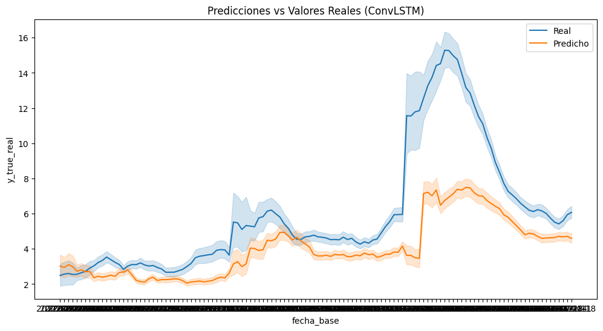
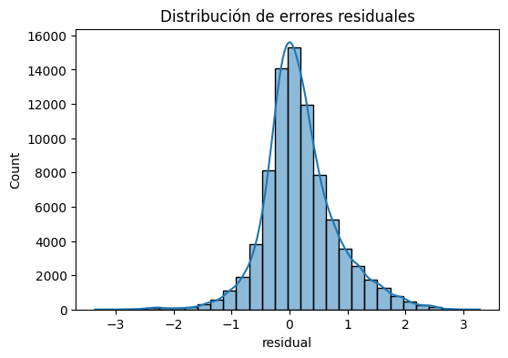
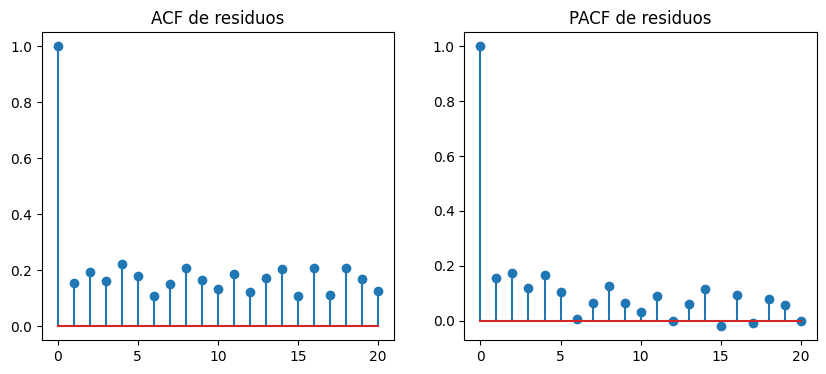
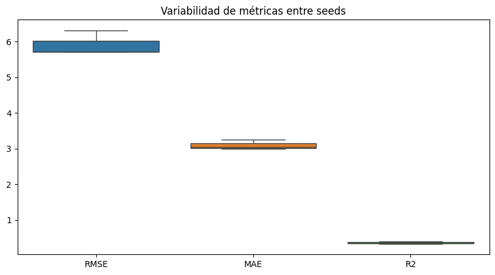
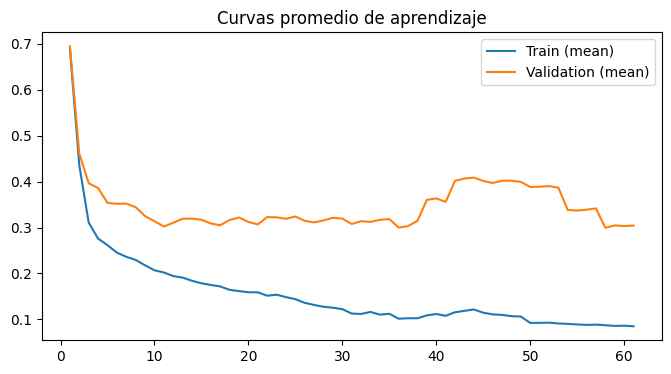
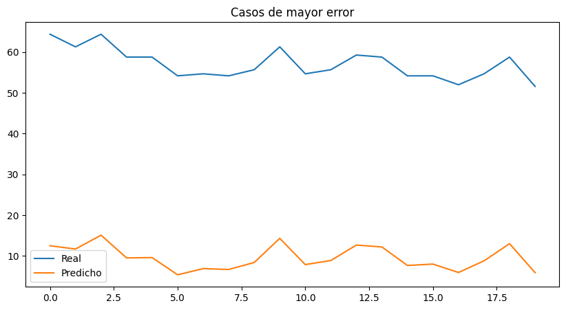

5. ConvLSTM#
5.1. Librerias#
import os
import copy
import random
import optuna
import numpy as np
import pandas as pd
import matplotlib.pyplot as plt
import seaborn as sns
from scipy.stats import ttest_rel, wilcoxon
from statsmodels.stats.diagnostic import acorr_ljungbox
from statsmodels.tsa.stattools import acf, pacf
from sklearn.metrics import mean_squared_error, mean_absolute_error, r2_score
from sklearn.preprocessing import RobustScaler
from sklearn.metrics import (
mean_squared_error,
mean_absolute_error,
r2_score
)
import torch
import torch.nn as nn
import torch.nn.functional as F
from torch.utils.data import (
Dataset,
DataLoader
)
import geopandas as gpd
from libpysal.weights import Queen
import sys
import time
5.2. Configuración Reproducibilidad#
SEEDS = [42, 123, 2024]
DEVICE = torch.device(
"cuda" if torch.cuda.is_available()
else "cpu"
)
print("DEVICE:", DEVICE)
if torch.cuda.is_available():
print("GPU:", torch.cuda.get_device_name(0))
print("Python:", sys.version)
print("Torch:", torch.__version__)
print("Numpy:", np.__version__)
print("Pandas:", pd.__version__)
DEVICE: cuda
GPU: NVIDIA GeForce RTX 5050 Laptop GPU
Python: 3.10.20 (main, Mar 3 2026, 09:24:47) [GCC 13.3.0]
Torch: 2.11.0+cu130
Numpy: 2.2.6
Pandas: 2.3.3
El entorno de ejecución utiliza PyTorch 2.11 con soporte CUDA 13.0 y una GPU NVIDIA GeForce RTX 5050 Laptop, lo que permite acelerar significativamente el entrenamiento de modelos de deep learning. Además, la configuración de semillas múltiples y versiones recientes de librerías como NumPy y Pandas favorece la reproducibilidad y estabilidad experimental.
def set_seed(seed=42):
random.seed(seed)
np.random.seed(seed)
torch.manual_seed(seed)
torch.cuda.manual_seed(seed)
torch.cuda.manual_seed_all(seed)
torch.backends.cudnn.deterministic = True
torch.backends.cudnn.benchmark = False
torch.use_deterministic_algorithms(True)
os.environ["PYTHONHASHSEED"] = str(seed)
print(f"Seed fijada: {seed}")
def seed_worker(worker_id):
worker_seed = torch.initial_seed() % 2**32
np.random.seed(worker_seed)
random.seed(worker_seed)
g = torch.Generator()
Este código implementa una estrategia exhaustiva de reproducibilidad en experimentos con PyTorch, fijando semillas en random, numpy y torch, además de desactivar optimizaciones no deterministas de CUDA (como cudnn.benchmark) para garantizar resultados consistentes entre ejecuciones. Asimismo, se controla la aleatoriedad en los data loaders mediante seed_worker y un generador de PyTorch, asegurando coherencia en el muestreo paralelo de datos.
5.3. Carga de Datos & Preprocesamiento#
5.3.1. Cargando Datos#
df = pd.read_csv("/home/guirlessa/Dl_Proyecto_Dengue/Bases_Datos/df_full.csv")
df.head()
| departamento | fecha_inicio | ano | semana | casos | casos_mujeres | casos_hombres | casos_rural | casos_urbano | (0_5] | ... | precip_lag_12 | precip_lag_20 | temp_c | temp_lag_1 | temp_lag_2 | temp_lag_3 | temp_lag_4 | temp_lag_8 | temp_lag_12 | temp_lag_20 | |
|---|---|---|---|---|---|---|---|---|---|---|---|---|---|---|---|---|---|---|---|---|---|
| 0 | Amazonas | 2012-01-02 | 2012 | 1 | 0.0 | 0 | 0 | 0 | 0 | 0 | ... | 50.983546 | 39.108242 | 24.848668 | 24.890654 | 24.334752 | 24.545618 | 25.345678 | 25.278160 | 25.874930 | 24.364443 |
| 1 | Amazonas | 2012-01-09 | 2012 | 2 | 0.0 | 0 | 0 | 0 | 0 | 0 | ... | 61.818291 | 62.830250 | 24.729721 | 24.848668 | 24.890654 | 24.334752 | 24.545618 | 25.084141 | 25.495665 | 24.971798 |
| 2 | Amazonas | 2012-01-16 | 2012 | 3 | 0.0 | 0 | 0 | 0 | 0 | 0 | ... | 24.950393 | 42.988018 | 24.638674 | 24.729721 | 24.848668 | 24.890654 | 24.334752 | 25.751070 | 25.760539 | 25.304947 |
| 3 | Amazonas | 2012-01-23 | 2012 | 4 | 0.0 | 0 | 0 | 0 | 0 | 0 | ... | 88.169343 | 56.572467 | 25.164008 | 24.638674 | 24.729721 | 24.848668 | 24.890654 | 25.284157 | 25.842089 | 25.166142 |
| 4 | Amazonas | 2012-01-30 | 2012 | 5 | 0.0 | 0 | 0 | 0 | 0 | 0 | ... | 56.271440 | 74.893047 | 24.604644 | 25.164008 | 24.638674 | 24.729721 | 24.848668 | 25.345678 | 25.278160 | 25.312395 |
5 rows × 54 columns
print("El dataframe tiene {0} filas y {1} columnas.".format(df.shape[0], df.shape[1]))
El dataframe tiene 21664 filas y 54 columnas.
df.info()
<class 'pandas.core.frame.DataFrame'>
RangeIndex: 21664 entries, 0 to 21663
Data columns (total 54 columns):
# Column Non-Null Count Dtype
--- ------ -------------- -----
0 departamento 21664 non-null object
1 fecha_inicio 21664 non-null object
2 ano 21664 non-null int64
3 semana 21664 non-null int64
4 casos 21664 non-null float64
5 casos_mujeres 21664 non-null int64
6 casos_hombres 21664 non-null int64
7 casos_rural 21664 non-null int64
8 casos_urbano 21664 non-null int64
9 (0_5] 21664 non-null int64
10 (5_13] 21664 non-null int64
11 (13_26] 21664 non-null int64
12 (26_60] 21664 non-null int64
13 60_mas 21664 non-null int64
14 casos_Contributivo 21664 non-null int64
15 casos_No_asegurado 21664 non-null int64
16 casos_Subsidiado 21664 non-null int64
17 poblacion 21664 non-null float64
18 poblacion_rural 21664 non-null float64
19 poblacion_urbana 21664 non-null float64
20 prop_rural 21664 non-null float64
21 prop_urbana 21664 non-null float64
22 incidencia 21664 non-null float64
23 inc_lag_1 21664 non-null float64
24 inc_lag_2 21664 non-null float64
25 inc_lag_3 21664 non-null float64
26 inc_lag_4 21664 non-null float64
27 inc_lag_8 21664 non-null float64
28 inc_lag_12 21664 non-null float64
29 inc_lag_20 21664 non-null float64
30 humedad_relativa 21664 non-null float64
31 humedad_lag_1 21664 non-null float64
32 humedad_lag_2 21664 non-null float64
33 humedad_lag_3 21664 non-null float64
34 humedad_lag_4 21664 non-null float64
35 humedad_lag_8 21664 non-null float64
36 humedad_lag_12 21664 non-null float64
37 humedad_lag_20 21664 non-null float64
38 precipitacion 21664 non-null float64
39 precip_lag_1 21664 non-null float64
40 precip_lag_2 21664 non-null float64
41 precip_lag_3 21664 non-null float64
42 precip_lag_4 21664 non-null float64
43 precip_lag_8 21664 non-null float64
44 precip_lag_12 21664 non-null float64
45 precip_lag_20 21664 non-null float64
46 temp_c 21664 non-null float64
47 temp_lag_1 21664 non-null float64
48 temp_lag_2 21664 non-null float64
49 temp_lag_3 21664 non-null float64
50 temp_lag_4 21664 non-null float64
51 temp_lag_8 21664 non-null float64
52 temp_lag_12 21664 non-null float64
53 temp_lag_20 21664 non-null float64
dtypes: float64(38), int64(14), object(2)
memory usage: 8.9+ MB
Se observa que la variable fecha_inicio está tipificada como object, cuando en realidad debería corresponder al tipo datetime. Por ello, se procederá a realizar la conversión adecuada para garantizar un manejo correcto de fechas en las etapas posteriores de modelado.
df["fecha_inicio"] = pd.to_datetime(df["fecha_inicio"])
También se procede a organizar los registros del DataFrame según el departamento y la fecha de inicio, con el objetivo de asegurar una estructura temporal coherente que facilite el análisis y el posterior proceso de modelado.
df = df.sort_values(
["departamento", "fecha_inicio"]
).reset_index(drop=True)
5.3.2. Feature Enginering#
Con el fin de incorporar la estacionalidad anual de la enfermedad, se construyeron las variables cíclicas week_sin y week_cos a partir de la semana epidemiológica normalizada. Esta transformación permite representar la naturaleza periódica del calendario, preservando la continuidad entre el final y el inicio de cada año, y facilitando que los modelos capturen patrones estacionales recurrentes asociados a la transmisión del dengue.
weeks_per_year = df.groupby("ano")["semana"].transform("max")
df["week_norm"] = df["semana"] / weeks_per_year
df["week_sin"] = np.sin(2 * np.pi * df["week_norm"])
df["week_cos"] = np.cos(2 * np.pi * df["week_norm"])
Este conjunto de FEATURES define el espacio de variables utilizado para el modelado, combinando información temporal, climática y sociodemográfica. En particular, se incorporan múltiples rezagos (lags) de la incidencia y variables meteorológicas (temperatura, humedad y precipitación) para capturar dependencias temporales y efectos retardados, junto con variables estructurales como población y proporción rural. Adicionalmente, las componentes cíclicas week_sin y week_cos permiten modelar la estacionalidad semanal de forma continua, evitando discontinuidades propias de una codificación directa del tiempo.
FEATURES = [
"inc_lag_1",
"inc_lag_2",
"inc_lag_3",
"inc_lag_4",
"inc_lag_8",
"inc_lag_12",
"inc_lag_20",
"temp_lag_1",
"temp_lag_2",
"temp_lag_4",
"temp_lag_8",
"temp_lag_12",
"temp_lag_20",
"humedad_lag_1",
"humedad_lag_2",
"humedad_lag_4",
"humedad_lag_8",
"humedad_lag_12",
"humedad_lag_20",
"precip_lag_1",
"precip_lag_2",
"precip_lag_4",
"precip_lag_8",
"precip_lag_12",
"precip_lag_20",
"poblacion",
"prop_rural",
"week_sin",
"week_cos"
]
Asimismo, durante el análisis exploratorio de datos se observó que la variable de incidencia presentaba una distribución fuertemente asimétrica hacia la derecha, caracterizada por la presencia de valores extremos asociados a periodos epidémicos. Debido a ello, se consideró necesario aplicar una transformación logarítmica con el objetivo de reducir la asimetría, estabilizar la varianza y facilitar que los modelos capturen de manera más adecuada la estructura temporal y los patrones subyacentes de la incidencia del dengue.
df["incidencia_log"] = np.log1p(df["incidencia"])
TARGET = "incidencia_log"
Con el fin de evaluar el efecto de la transformación logarítmica, se compararon las distribuciones de la incidencia antes y después del preprocesamiento. La distribución original presentaba una marcada asimetría positiva y una alta concentración de valores extremos asociados a periodos epidémicos. Tras aplicar la transformación logarítmica (log1p), se observó una reducción significativa del sesgo y una distribución más equilibrada, lo que contribuye a estabilizar la varianza y facilita la identificación de patrones temporales por parte de los modelos predictivos.
fig, axes = plt.subplots(1, 2, figsize=(14, 5))
sns.histplot(
df["incidencia"],
kde=True,
ax=axes[0]
)
axes[0].set_title("Incidencia Original")
sns.histplot(
np.log1p(df["incidencia"]),
kde=True,
ax=axes[1]
)
axes[1].set_title("Incidencia Transformada (log1p)")
plt.tight_layout()
plt.show()
fig, axes = plt.subplots(1, 2, figsize=(12, 5))
sns.boxplot(y=df["incidencia"], ax=axes[0])
axes[0].set_title("Original")
sns.boxplot(y=np.log1p(df["incidencia"]), ax=axes[1])
axes[1].set_title("Log1p")
plt.tight_layout()
plt.show()


5.3.3. Grafo Espacial#
departments = sorted(df["departamento"].unique())
dept_to_idx = {d: i for i, d in enumerate(departments)}
idx_to_dept = {i: d for d, i in dept_to_idx.items()}
NUM_NODES = len(departments)
gdf = gpd.read_file(
"/home/guirlessa/Dl_Proyecto_Dengue/Covariables/MGN_ADM_DPTO_POLITICO/MGN_ADM_DPTO_POLITICO_limpio.shp"
)
gdf = gdf.set_index("dpto_cnmbr").loc[departments].reset_index()
def build_queen_adj(gdf, departments):
w = Queen.from_dataframe(gdf)
adj = np.zeros(
(len(departments), len(departments)),
dtype=np.float32
)
for i, neighbors in w.neighbors.items():
for j in neighbors:
adj[i, j] = 1.0
np.fill_diagonal(adj, 1.0)
return adj
def normalize_adj(adj):
D = np.diag(np.power(adj.sum(axis=1), -0.5))
return (D @ adj @ D).astype(np.float32)
adj_raw = build_queen_adj(gdf, departments)
adj_normalized = normalize_adj(adj_raw)
adj_matrix = torch.tensor(
adj_normalized,
dtype=torch.float32
).to(DEVICE)
/tmp/ipykernel_10006/1012815684.py:26: FutureWarning: `use_index` defaults to False but will default to True in future. Set True/False directly to control this behavior and silence this warning
w = Queen.from_dataframe(gdf)
5.3.4. Normalización de los Datos#
def scale_data(X_train, X_val):
scaler = RobustScaler()
_, _, _, n_features = X_train.shape
X_train_2d = X_train.reshape(-1, n_features)
scaler.fit(X_train_2d)
X_train_scaled = scaler.transform(X_train_2d).reshape(X_train.shape)
X_val_scaled = scaler.transform(
X_val.reshape(-1, n_features)
).reshape(X_val.shape)
return X_train_scaled, X_val_scaled, scaler
5.4. Esquema de validación temporal#
Se implementa un esquema de validación cruzada temporal anidada (nested time series cross-validation), en el cual los datos se dividen respetando estrictamente el orden cronológico para evitar data leakage. En el nivel externo, se definen particiones de entrenamiento y prueba por año (2022–2024), simulando un escenario real de predicción futura; mientras que en el nivel interno, el conjunto de entrenamiento se subdivide nuevamente en conjuntos de entrenamiento y validación (2019–2021) para ajuste de hiperparámetros y selección de modelos. Este enfoque garantiza una evaluación más robusta y realista al emular la dinámica de predicción en series temporales.
def create_outer_folds(df, date_col="fecha_inicio"):
folds = []
outer_years = [2022, 2023, 2024]
for test_year in outer_years:
train_df = df[df[date_col].dt.year < test_year].copy()
test_df = df[df[date_col].dt.year == test_year].copy()
folds.append({
"test_year": test_year,
"train_df": train_df,
"test_df": test_df
})
return folds
outer_folds = create_outer_folds(df)
def create_inner_folds(train_df, val_years=[2019, 2020, 2021]):
inner_folds = []
for val_year in val_years:
inner_train = train_df[
train_df["fecha_inicio"].dt.year < val_year
].copy()
inner_val = train_df[
train_df["fecha_inicio"].dt.year == val_year
].copy()
inner_folds.append({
"val_year": val_year,
"inner_train": inner_train,
"inner_val": inner_val
})
return inner_folds
5.5. Construcción de Ventanas de Tiempo#
Esta función implementa la construcción del conjunto de datos supervisado para modelado espaciotemporal, mediante la transformación de datos tabulares en tensores estructurados compatibles con arquitecturas de aprendizaje profundo. En primer lugar, reorganiza las variables explicativas y la variable objetivo a través de tablas pivote indexadas por fecha y departamento, asegurando consistencia en la representación espacial. Posteriormente, se unifican las variables en un tensor multivariado y se genera una estructura de secuencias mediante una estrategia de ventanas deslizantes (sliding windows), en la que se define explícitamente un historial de observación (window_size) y un horizonte de predicción (horizon). Finalmente, se preserva información auxiliar como las fechas de referencia y el orden de los departamentos, lo cual es fundamental para mantener la coherencia temporal y espacial del conjunto de datos.
# ============================================================
# CREATE WINDOWS
# ============================================================
def create_windows(
df,
features,
target,
window_size=12,
horizon=4
):
pivot_features = []
for feat in features:
pivot = df.pivot_table(
index="fecha_inicio",
columns="departamento",
values=feat
).sort_index()
pivot_features.append(pivot.values)
X_all = np.stack(pivot_features, axis=-1)
target_pivot = df.pivot_table(
index="fecha_inicio",
columns="departamento",
values=target
).sort_index()
y_all = target_pivot.values
dates = target_pivot.index.values
X = []
y = []
base_dates = []
total_steps = len(dates)
for i in range(total_steps - window_size - horizon + 1):
X.append(X_all[i : i + window_size])
y.append(y_all[i + window_size : i + window_size + horizon])
base_dates.append(dates[i + window_size - 1])
X = np.array(X, dtype=np.float32)
y = np.array(y, dtype=np.float32)
base_dates = np.array(base_dates)
return X, y, base_dates
5.6. Funciones para el modelado#
class EarlyStopping:
def __init__(self, patience=20):
self.patience = patience
self.best_loss = np.inf
self.counter = 0
self.stop = False
def step(self, val_loss):
if val_loss < self.best_loss:
self.best_loss = val_loss
self.counter = 0
else:
self.counter += 1
if self.counter >= self.patience:
self.stop = True
Por otro lado, train_one_epoch y validate_one_epoch definen los ciclos estándar de entrenamiento y evaluación por época, respectivamente: la primera realiza la optimización del modelo mediante retropropagación del error, actualización de parámetros y recorte de gradientes para estabilizar el aprendizaje, mientras que la segunda evalúa el desempeño del modelo en modo inferencia sin actualización de pesos, permitiendo monitorear su generalización.
def train_one_epoch(model, dataloader, criterion, optimizer, device):
model.train()
total_loss = 0
for X_batch, y_batch in dataloader:
X_batch = X_batch.to(device)
y_batch = y_batch.to(device)
optimizer.zero_grad()
pred = model(X_batch, adj_matrix)
loss = criterion(pred, y_batch)
loss.backward()
nn.utils.clip_grad_norm_(model.parameters(), max_norm=1.0)
optimizer.step()
total_loss += loss.item()
return total_loss / len(dataloader)
def validate_one_epoch(model, dataloader, criterion, device):
model.eval()
total_loss = 0
with torch.no_grad():
for X_batch, y_batch in dataloader:
X_batch = X_batch.to(device)
y_batch = y_batch.to(device)
pred = model(X_batch, adj_matrix)
loss = criterion(pred, y_batch)
total_loss += loss.item()
return total_loss / len(dataloader)
5.7. Arquitectura#
class Dataset(Dataset):
def __init__(self, X, y):
self.X = torch.tensor(X, dtype=torch.float32)
self.y = torch.tensor(y, dtype=torch.float32)
def __len__(self):
return len(self.X)
def __getitem__(self, idx):
return self.X[idx], self.y[idx]
class ConvLSTMCell(nn.Module):
def __init__(self, in_channels, hidden_size, kernel_size=3):
super().__init__()
padding = kernel_size // 2
self.conv_x = nn.Conv1d(
in_channels,
4 * hidden_size,
kernel_size=kernel_size,
padding=padding
)
self.conv_h = nn.Conv1d(
hidden_size,
4 * hidden_size,
kernel_size=kernel_size,
padding=padding
)
self.hidden_size = hidden_size
def forward(self, x, h, c):
xp = x.permute(0, 2, 1)
hp = h.permute(0, 2, 1)
gates = self.conv_x(xp) + self.conv_h(hp)
gates = gates.permute(0, 2, 1)
i, f, g, o = gates.chunk(4, dim=-1)
i = torch.sigmoid(i)
f = torch.sigmoid(f)
g = torch.tanh(g)
o = torch.sigmoid(o)
c_next = f * c + i * g
h_next = o * torch.tanh(c_next)
return h_next, c_next
class ConvLSTM(nn.Module):
def __init__(
self,
num_nodes,
in_channels,
hidden_size=64,
num_layers=2,
kernel_size=3,
horizon=4,
dropout=0.1
):
super().__init__()
self.num_layers = num_layers
self.hidden_size = hidden_size
self.horizon = horizon
self.num_nodes = num_nodes
self.cells = nn.ModuleList()
for layer in range(num_layers):
in_ch = in_channels if layer == 0 else hidden_size
self.cells.append(
ConvLSTMCell(in_ch, hidden_size, kernel_size)
)
self.dropout = nn.Dropout(dropout)
self.norm = nn.LayerNorm(hidden_size)
self.output_conv = nn.Conv1d(
hidden_size,
horizon,
kernel_size=1
)
def forward(self, x, adj=None):
batch, T, nodes, _ = x.shape
h = [
torch.zeros(batch, nodes, self.hidden_size, device=x.device)
for _ in range(self.num_layers)
]
c = [
torch.zeros(batch, nodes, self.hidden_size, device=x.device)
for _ in range(self.num_layers)
]
for t in range(T):
x_t = x[:, t, :, :]
for layer in range(self.num_layers):
h[layer], c[layer] = self.cells[layer](
x_t, h[layer], c[layer]
)
x_t = self.dropout(h[layer])
h_last = self.norm(h[-1])
out = self.output_conv(h_last.permute(0, 2, 1))
return out
5.8. Optimización de Hiperperametros#
Inicializamos el entorno experimental del pipeline de optimización y evaluación del modelo, definiendo estructuras globales para almacenar resultados de múltiples etapas del experimento (tuning, validación cruzada, entrenamiento y evaluación final).
ALL_OPTUNA_TRIALS = []
ALL_OPTUNA_FOLDS = []
ALL_RESIDUALS = []
ALL_INFERENCE_TIME = []
ALL_BEST_PARAMS = []
ALL_RESULTS = []
ALL_PREDICTIONS = []
ALL_LOSSES = []
TUNING_DF = df[df["fecha_inicio"].dt.year < 2022].copy()
INNER_FOLDS_TUNING = create_inner_folds(
TUNING_DF,
val_years=[2019, 2020, 2021]
)
Ahora definimos la función objective, la cual implementa el proceso de optimización de hiperparámetros para el modelo ConvLSTM mediante validación cruzada interna. En cada trial, se muestrean distintos hiperparámetros (como tamaño de ventana, tasa de aprendizaje, número de capas, tamaño de filtros y dropout) y se evalúan mediante entrenamiento del modelo en los inner folds. Para cada partición se construyen ventanas temporales, se escalan los datos, se entrena el modelo con early stopping y se calcula el RMSE sobre el conjunto de validación. Finalmente, se promedia el error entre folds para obtener la métrica objetivo a minimizar, registrando además información detallada de cada experimento para análisis posterior.
def objective(trial):
window_size = trial.suggest_categorical(
"window_size", [4, 8, 12, 16]
)
learning_rate = trial.suggest_float(
"learning_rate", 1e-4, 1e-2, log=True
)
batch_size = trial.suggest_categorical(
"batch_size", [16, 32]
)
hidden_size = trial.suggest_categorical(
"hidden_size", [32, 64, 128]
)
num_layers = trial.suggest_int(
"num_layers", 1, 3
)
kernel_size = trial.suggest_categorical(
"kernel_size", [3, 5, 7]
)
dropout = trial.suggest_float(
"dropout", 0.0, 0.4, step=0.1
)
rmse_folds = []
fold_errors = []
for fold_id, fold in enumerate(INNER_FOLDS_TUNING):
X_train, y_train, _ = create_windows(
fold["inner_train"],
FEATURES,
TARGET,
window_size,
4
)
X_val, y_val, _ = create_windows(
fold["inner_val"],
FEATURES,
TARGET,
window_size,
4
)
X_train_scaled, X_val_scaled, _ = scale_data(X_train, X_val)
train_dataset = Dataset(X_train_scaled, y_train)
val_dataset = Dataset(X_val_scaled, y_val)
g.manual_seed(seed)
train_loader = DataLoader(
train_dataset,
batch_size=batch_size,
shuffle=False,
worker_init_fn=seed_worker,
generator=g
)
val_loader = DataLoader(
val_dataset,
batch_size=batch_size,
shuffle=False
)
model = ConvLSTM(
num_nodes=NUM_NODES,
in_channels=len(FEATURES),
hidden_size=hidden_size,
num_layers=num_layers,
kernel_size=kernel_size,
horizon=4,
dropout=dropout
).to(DEVICE)
criterion = nn.MSELoss()
optimizer = torch.optim.Adam(
model.parameters(),
lr=learning_rate
)
early_stopping = EarlyStopping(patience=10)
for epoch in range(50):
train_one_epoch(
model, train_loader, criterion, optimizer, DEVICE
)
val_loss = validate_one_epoch(
model, val_loader, criterion, DEVICE
)
early_stopping.step(val_loss)
if early_stopping.stop:
break
model.eval()
preds = []
trues = []
with torch.no_grad():
for X_batch, y_batch in val_loader:
pred = model(X_batch.to(DEVICE), adj_matrix)
preds.append(pred.cpu().numpy())
trues.append(y_batch.numpy())
preds = np.concatenate(preds)
trues = np.concatenate(trues)
errors = trues - preds
rmse = np.sqrt(
mean_squared_error(trues.flatten(), preds.flatten())
)
rmse_folds.append(rmse)
fold_errors.append({
"trial": trial.number,
"seed": seed,
"fold": fold_id,
"rmse": rmse,
"error_mean": float(np.mean(errors)),
"error_std": float(np.std(errors))
})
rmse_mean = float(np.mean(rmse_folds))
rmse_std = float(np.std(rmse_folds))
ALL_OPTUNA_TRIALS.append({
"trial": trial.number,
"seed": seed,
"window_size": window_size,
"learning_rate": learning_rate,
"batch_size": batch_size,
"hidden_size": hidden_size,
"num_layers": num_layers,
"kernel_size": kernel_size,
"dropout": dropout,
"rmse_mean": rmse_mean,
"rmse_std": rmse_std
})
ALL_OPTUNA_FOLDS.extend(fold_errors)
trial.set_user_attr("rmse_folds", rmse_folds)
trial.set_user_attr("rmse_std", rmse_std)
return rmse_mean
5.9. Pipeline Train, Validation & Test#
Ahora se procede a ejecutar el ciclo completo de optimización de hiperparámetros, entrenamiento y evaluación del modelo ConvLSTM bajo un esquema de validación cruzada temporal anidada. En este proceso, para cada semilla se realiza primero la búsqueda de hiperparámetros mediante Optuna, y posteriormente se entrena el modelo en cada outer fold utilizando la mejor configuración obtenida. En cada partición se construyen los conjuntos de entrenamiento, validación y prueba, se realiza el escalamiento de variables y se entrena el modelo con estrategias de regularización como early stopping y ajuste dinámico de la tasa de aprendizaje. Finalmente, se evalúa el desempeño sobre el conjunto de prueba mediante métricas de error, registrando además tiempos de entrenamiento e inferencia, así como predicciones y residuos a nivel detallado para análisis posterior.
for seed in SEEDS:
print("\n")
print("="*100)
print(f"SEED {seed}")
print("="*100)
set_seed(seed)
sampler = optuna.samplers.TPESampler(seed=seed)
study = optuna.create_study(
direction="minimize",
sampler=sampler
)
study.optimize(objective, n_trials=30)
best_params = study.best_trial.params
print(f"\nMejores hiperparámetros para seed {seed}:")
print(best_params)
pd.DataFrame([{"seed": seed, **best_params}]).to_csv(
f"/home/guirlessa/Dl_Proyecto_Dengue/Modelos/CONVLSTM/convlstm_best_params_seed_{seed}.csv",
index=False
)
ALL_BEST_PARAMS.append({"seed": seed, **best_params})
for outer_idx, outer_fold in enumerate(outer_folds):
print("\n")
print("="*100)
print(f"OUTER FOLD {outer_idx+1} | Test year: {outer_fold['test_year']}")
print("="*100)
outer_train_df = outer_fold["train_df"]
final_test_df = outer_fold["test_df"]
window_size = best_params["window_size"]
hidden_size = best_params["hidden_size"]
num_layers = best_params["num_layers"]
kernel_size = best_params["kernel_size"]
dropout = best_params["dropout"]
learning_rate = best_params["learning_rate"]
batch_size = best_params["batch_size"]
val_year = outer_train_df["fecha_inicio"].dt.year.max()
final_train_df = outer_train_df[
outer_train_df["fecha_inicio"].dt.year < val_year
]
final_val_df = outer_train_df[
outer_train_df["fecha_inicio"].dt.year == val_year
]
X_train, y_train, train_dates = create_windows(
final_train_df, FEATURES, TARGET, window_size, 4
)
X_val, y_val, val_dates = create_windows(
final_val_df, FEATURES, TARGET, window_size, 4
)
X_test, y_test, test_dates = create_windows(
final_test_df, FEATURES, TARGET, window_size, 4
)
X_train_scaled, X_val_scaled, scaler = scale_data(X_train, X_val)
X_test_scaled = scaler.transform(
X_test.reshape(-1, X_test.shape[-1])
).reshape(X_test.shape)
train_dataset = Dataset(X_train_scaled, y_train)
val_dataset = Dataset(X_val_scaled, y_val)
test_dataset = Dataset(X_test_scaled, y_test)
train_loader = DataLoader(train_dataset, batch_size=batch_size, shuffle=False)
val_loader = DataLoader(val_dataset, batch_size=batch_size, shuffle=False)
test_loader = DataLoader(test_dataset, batch_size=batch_size, shuffle=False)
model = ConvLSTM(
num_nodes=NUM_NODES,
in_channels=len(FEATURES),
hidden_size=hidden_size,
num_layers=num_layers,
kernel_size=kernel_size,
horizon=4,
dropout=dropout
).to(DEVICE)
criterion = nn.MSELoss()
optimizer = torch.optim.Adam(
model.parameters(),
lr=learning_rate
)
scheduler = torch.optim.lr_scheduler.ReduceLROnPlateau(
optimizer, mode="min", factor=0.5, patience=10
)
early_stopping = EarlyStopping(patience=20)
best_model = None
best_loss = np.inf
total_train_time = 0.0
for epoch in range(300):
start_epoch = time.time()
train_loss = train_one_epoch(
model, train_loader, criterion, optimizer, DEVICE
)
val_loss = validate_one_epoch(
model, val_loader, criterion, DEVICE
)
scheduler.step(val_loss)
epoch_time = time.time() - start_epoch
total_train_time += epoch_time
print(
f"Epoch {epoch+1}"
f" | Train {train_loss:.4f}"
f" | Val {val_loss:.4f}"
f" | Time {epoch_time:.2f}s"
)
ALL_LOSSES.append({
"seed": seed,
"outer_fold": outer_idx + 1,
"test_year": outer_fold["test_year"],
"epoch": epoch + 1,
"train_loss": train_loss,
"val_loss": val_loss,
"epoch_time": epoch_time
})
if val_loss < best_loss:
best_loss = val_loss
best_model = copy.deepcopy(model)
early_stopping.step(val_loss)
if early_stopping.stop:
break
model = best_model
torch.save(
model.state_dict(),
f"/home/guirlessa/Dl_Proyecto_Dengue/Modelos/CONVLSTM/"
f"convlstm_seed_{seed}_outer_fold_{outer_idx+1}.pt"
)
model.eval()
start_inference = time.time()
predictions = []
targets = []
with torch.no_grad():
for X_batch, y_batch in test_loader:
X_batch = X_batch.to(DEVICE)
pred = model(X_batch, adj_matrix)
predictions.append(pred.cpu().numpy())
targets.append(y_batch.numpy())
inference_time = time.time() - start_inference
predictions = np.concatenate(predictions)
targets = np.concatenate(targets)
mse = mean_squared_error(targets.flatten(), predictions.flatten())
rmse = np.sqrt(mse)
mae = mean_absolute_error(targets.flatten(), predictions.flatten())
r2 = r2_score(targets.flatten(), predictions.flatten())
ALL_RESULTS.append({
"seed": seed,
"outer_fold": outer_idx + 1,
"test_year": outer_fold["test_year"],
"mse": mse,
"rmse": rmse,
"mae": mae,
"r2": r2,
"train_time": total_train_time,
"inference_time": inference_time
})
ALL_INFERENCE_TIME.append({
"seed": seed,
"outer_fold": outer_idx + 1,
"test_year": outer_fold["test_year"],
"inference_time": inference_time,
"train_time": total_train_time
})
rows = []
for i in range(len(predictions)):
for h in range(4):
for node in range(NUM_NODES):
y_true = targets[i, h, node]
y_pred = predictions[i, h, node]
residual = y_true - y_pred
rows.append({
"seed": seed,
"outer_fold": outer_idx + 1,
"test_year": outer_fold["test_year"],
"departamento": idx_to_dept[node],
"fecha_base": test_dates[i],
"horizonte": h + 1,
"y_true_log": y_true,
"y_pred_log": y_pred,
"y_true_real": np.expm1(y_true),
"y_pred_real": np.expm1(y_pred),
"residual": residual,
"abs_error": abs(residual),
"sq_error": residual ** 2
})
ALL_RESIDUALS.append({
"seed": seed,
"outer_fold": outer_idx + 1,
"test_year": outer_fold["test_year"],
"departamento": idx_to_dept[node],
"fecha_base": test_dates[i],
"horizonte": h + 1,
"residual": residual
})
ALL_PREDICTIONS.append(pd.DataFrame(rows))
====================================================================================================
SEED 42
====================================================================================================
[I 2026-06-01 12:02:47,959] A new study created in memory with name: no-name-b03528b3-b611-406f-b312-1890469de633
Seed fijada: 42
[I 2026-06-01 12:03:36,795] Trial 0 finished with value: 0.41922526233335633 and parameters: {'window_size': 8, 'learning_rate': 0.0002051338263087451, 'batch_size': 16, 'hidden_size': 32, 'num_layers': 1, 'kernel_size': 3, 'dropout': 0.0}. Best is trial 0 with value: 0.41922526233335633.
[I 2026-06-01 12:04:58,967] Trial 1 finished with value: 0.5825080339323742 and parameters: {'window_size': 12, 'learning_rate': 0.0003823475224675188, 'batch_size': 16, 'hidden_size': 128, 'num_layers': 3, 'kernel_size': 7, 'dropout': 0.0}. Best is trial 0 with value: 0.41922526233335633.
[I 2026-06-01 12:05:36,925] Trial 2 finished with value: 0.49604057020689357 and parameters: {'window_size': 16, 'learning_rate': 0.00853618986286683, 'batch_size': 16, 'hidden_size': 64, 'num_layers': 1, 'kernel_size': 7, 'dropout': 0.1}. Best is trial 0 with value: 0.41922526233335633.
[I 2026-06-01 12:06:25,870] Trial 3 finished with value: 0.4633118111352188 and parameters: {'window_size': 4, 'learning_rate': 0.00023426581058204064, 'batch_size': 16, 'hidden_size': 32, 'num_layers': 3, 'kernel_size': 5, 'dropout': 0.1}. Best is trial 0 with value: 0.41922526233335633.
[I 2026-06-01 12:07:36,144] Trial 4 finished with value: 0.5337558578834385 and parameters: {'window_size': 12, 'learning_rate': 0.0003646439558980723, 'batch_size': 16, 'hidden_size': 128, 'num_layers': 3, 'kernel_size': 7, 'dropout': 0.30000000000000004}. Best is trial 0 with value: 0.41922526233335633.
[I 2026-06-01 12:08:16,179] Trial 5 finished with value: 0.4675345828715942 and parameters: {'window_size': 8, 'learning_rate': 0.0001705053926026929, 'batch_size': 16, 'hidden_size': 32, 'num_layers': 1, 'kernel_size': 7, 'dropout': 0.2}. Best is trial 0 with value: 0.41922526233335633.
[I 2026-06-01 12:08:34,444] Trial 6 finished with value: 0.42062235654317043 and parameters: {'window_size': 12, 'learning_rate': 0.003482846706526885, 'batch_size': 32, 'hidden_size': 32, 'num_layers': 1, 'kernel_size': 3, 'dropout': 0.4}. Best is trial 0 with value: 0.41922526233335633.
[I 2026-06-01 12:10:22,855] Trial 7 finished with value: 0.5015672597662474 and parameters: {'window_size': 12, 'learning_rate': 0.00014254757044027455, 'batch_size': 16, 'hidden_size': 32, 'num_layers': 3, 'kernel_size': 7, 'dropout': 0.2}. Best is trial 0 with value: 0.41922526233335633.
[I 2026-06-01 12:10:59,949] Trial 8 finished with value: 0.49971693143347645 and parameters: {'window_size': 8, 'learning_rate': 0.000285673742984719, 'batch_size': 32, 'hidden_size': 32, 'num_layers': 2, 'kernel_size': 7, 'dropout': 0.4}. Best is trial 0 with value: 0.41922526233335633.
[I 2026-06-01 12:11:29,776] Trial 9 finished with value: 0.4420393128667634 and parameters: {'window_size': 12, 'learning_rate': 0.008781408196485976, 'batch_size': 16, 'hidden_size': 32, 'num_layers': 1, 'kernel_size': 3, 'dropout': 0.1}. Best is trial 0 with value: 0.41922526233335633.
[I 2026-06-01 12:11:46,460] Trial 10 finished with value: 0.47289551170235145 and parameters: {'window_size': 8, 'learning_rate': 0.0009486960387681202, 'batch_size': 32, 'hidden_size': 64, 'num_layers': 2, 'kernel_size': 3, 'dropout': 0.0}. Best is trial 0 with value: 0.41922526233335633.
[I 2026-06-01 12:12:24,204] Trial 11 finished with value: 0.4371199814185392 and parameters: {'window_size': 16, 'learning_rate': 0.003085473344630512, 'batch_size': 32, 'hidden_size': 32, 'num_layers': 2, 'kernel_size': 3, 'dropout': 0.4}. Best is trial 0 with value: 0.41922526233335633.
[I 2026-06-01 12:12:35,183] Trial 12 finished with value: 0.47205821698337447 and parameters: {'window_size': 4, 'learning_rate': 0.0020256685637234087, 'batch_size': 32, 'hidden_size': 32, 'num_layers': 1, 'kernel_size': 3, 'dropout': 0.30000000000000004}. Best is trial 0 with value: 0.41922526233335633.
[I 2026-06-01 12:12:54,458] Trial 13 finished with value: 0.4323577994731684 and parameters: {'window_size': 8, 'learning_rate': 0.0008657857585898337, 'batch_size': 32, 'hidden_size': 32, 'num_layers': 1, 'kernel_size': 3, 'dropout': 0.30000000000000004}. Best is trial 0 with value: 0.41922526233335633.
[I 2026-06-01 12:13:12,872] Trial 14 finished with value: 0.5099925095025352 and parameters: {'window_size': 12, 'learning_rate': 0.003624503431877557, 'batch_size': 32, 'hidden_size': 128, 'num_layers': 1, 'kernel_size': 5, 'dropout': 0.2}. Best is trial 0 with value: 0.41922526233335633.
[I 2026-06-01 12:13:34,942] Trial 15 finished with value: 0.4668347908803167 and parameters: {'window_size': 8, 'learning_rate': 0.0018263988895044737, 'batch_size': 32, 'hidden_size': 64, 'num_layers': 2, 'kernel_size': 3, 'dropout': 0.0}. Best is trial 0 with value: 0.41922526233335633.
[I 2026-06-01 12:13:57,757] Trial 16 finished with value: 0.43224148272002777 and parameters: {'window_size': 4, 'learning_rate': 0.0005887566238745413, 'batch_size': 16, 'hidden_size': 32, 'num_layers': 1, 'kernel_size': 3, 'dropout': 0.4}. Best is trial 0 with value: 0.41922526233335633.
[I 2026-06-01 12:14:33,743] Trial 17 finished with value: 0.43364883055901854 and parameters: {'window_size': 16, 'learning_rate': 0.003510202827782954, 'batch_size': 32, 'hidden_size': 32, 'num_layers': 2, 'kernel_size': 3, 'dropout': 0.1}. Best is trial 0 with value: 0.41922526233335633.
[I 2026-06-01 12:15:05,494] Trial 18 finished with value: 0.46968697295949235 and parameters: {'window_size': 12, 'learning_rate': 0.00011352328147328891, 'batch_size': 16, 'hidden_size': 128, 'num_layers': 1, 'kernel_size': 5, 'dropout': 0.30000000000000004}. Best is trial 0 with value: 0.41922526233335633.
[I 2026-06-01 12:15:28,304] Trial 19 finished with value: 0.48486296731228423 and parameters: {'window_size': 8, 'learning_rate': 0.0016516444441349277, 'batch_size': 32, 'hidden_size': 64, 'num_layers': 2, 'kernel_size': 3, 'dropout': 0.4}. Best is trial 0 with value: 0.41922526233335633.
[I 2026-06-01 12:15:46,801] Trial 20 finished with value: 0.4484274181291659 and parameters: {'window_size': 8, 'learning_rate': 0.00430299534925144, 'batch_size': 16, 'hidden_size': 32, 'num_layers': 1, 'kernel_size': 3, 'dropout': 0.0}. Best is trial 0 with value: 0.41922526233335633.
[I 2026-06-01 12:16:06,850] Trial 21 finished with value: 0.4184422907212908 and parameters: {'window_size': 4, 'learning_rate': 0.0006123803492955895, 'batch_size': 16, 'hidden_size': 32, 'num_layers': 1, 'kernel_size': 3, 'dropout': 0.4}. Best is trial 21 with value: 0.4184422907212908.
[I 2026-06-01 12:16:23,190] Trial 22 finished with value: 0.43008095691864473 and parameters: {'window_size': 4, 'learning_rate': 0.0006504384639163525, 'batch_size': 16, 'hidden_size': 32, 'num_layers': 1, 'kernel_size': 3, 'dropout': 0.4}. Best is trial 21 with value: 0.4184422907212908.
[I 2026-06-01 12:16:47,202] Trial 23 finished with value: 0.42376716161090405 and parameters: {'window_size': 4, 'learning_rate': 0.0001970256274929137, 'batch_size': 16, 'hidden_size': 32, 'num_layers': 1, 'kernel_size': 3, 'dropout': 0.30000000000000004}. Best is trial 21 with value: 0.4184422907212908.
[I 2026-06-01 12:17:10,533] Trial 24 finished with value: 0.42862417849224094 and parameters: {'window_size': 4, 'learning_rate': 0.0004704271678092945, 'batch_size': 16, 'hidden_size': 32, 'num_layers': 1, 'kernel_size': 3, 'dropout': 0.2}. Best is trial 21 with value: 0.4184422907212908.
[I 2026-06-01 12:17:24,771] Trial 25 finished with value: 0.4882296620369418 and parameters: {'window_size': 4, 'learning_rate': 0.001370555804367278, 'batch_size': 16, 'hidden_size': 32, 'num_layers': 1, 'kernel_size': 5, 'dropout': 0.4}. Best is trial 21 with value: 0.4184422907212908.
[I 2026-06-01 12:17:49,729] Trial 26 finished with value: 0.44496871685281997 and parameters: {'window_size': 12, 'learning_rate': 0.0050353125614800145, 'batch_size': 32, 'hidden_size': 32, 'num_layers': 2, 'kernel_size': 3, 'dropout': 0.30000000000000004}. Best is trial 21 with value: 0.4184422907212908.
[I 2026-06-01 12:18:23,419] Trial 27 finished with value: 0.4463174089751348 and parameters: {'window_size': 16, 'learning_rate': 0.0012955465362925304, 'batch_size': 16, 'hidden_size': 32, 'num_layers': 1, 'kernel_size': 3, 'dropout': 0.4}. Best is trial 21 with value: 0.4184422907212908.
[I 2026-06-01 12:18:47,881] Trial 28 finished with value: 0.43238911992678125 and parameters: {'window_size': 4, 'learning_rate': 0.00010099394122187656, 'batch_size': 32, 'hidden_size': 64, 'num_layers': 2, 'kernel_size': 3, 'dropout': 0.30000000000000004}. Best is trial 21 with value: 0.4184422907212908.
[I 2026-06-01 12:19:19,102] Trial 29 finished with value: 0.5133056243840283 and parameters: {'window_size': 12, 'learning_rate': 0.0003447121577357968, 'batch_size': 16, 'hidden_size': 128, 'num_layers': 1, 'kernel_size': 5, 'dropout': 0.1}. Best is trial 21 with value: 0.4184422907212908.
Mejores hiperparámetros para seed 42:
{'window_size': 4, 'learning_rate': 0.0006123803492955895, 'batch_size': 16, 'hidden_size': 32, 'num_layers': 1, 'kernel_size': 3, 'dropout': 0.4}
====================================================================================================
OUTER FOLD 1 | Test year: 2022
====================================================================================================
Epoch 1 | Train 0.8322 | Val 0.3187 | Time 0.18s
Epoch 2 | Train 0.3066 | Val 0.1909 | Time 0.19s
Epoch 3 | Train 0.2266 | Val 0.1582 | Time 0.19s
Epoch 4 | Train 0.1964 | Val 0.1439 | Time 0.19s
Epoch 5 | Train 0.1811 | Val 0.1365 | Time 0.20s
Epoch 6 | Train 0.1720 | Val 0.1321 | Time 0.21s
Epoch 7 | Train 0.1645 | Val 0.1285 | Time 0.19s
Epoch 8 | Train 0.1578 | Val 0.1254 | Time 0.19s
Epoch 9 | Train 0.1521 | Val 0.1227 | Time 0.18s
Epoch 10 | Train 0.1471 | Val 0.1205 | Time 0.34s
Epoch 11 | Train 0.1429 | Val 0.1186 | Time 0.30s
Epoch 12 | Train 0.1393 | Val 0.1169 | Time 0.22s
Epoch 13 | Train 0.1361 | Val 0.1155 | Time 0.22s
Epoch 14 | Train 0.1334 | Val 0.1144 | Time 0.24s
Epoch 15 | Train 0.1310 | Val 0.1137 | Time 0.20s
Epoch 16 | Train 0.1288 | Val 0.1132 | Time 0.20s
Epoch 17 | Train 0.1269 | Val 0.1128 | Time 0.21s
Epoch 18 | Train 0.1251 | Val 0.1125 | Time 0.19s
Epoch 19 | Train 0.1235 | Val 0.1123 | Time 0.20s
Epoch 20 | Train 0.1219 | Val 0.1121 | Time 0.23s
Epoch 21 | Train 0.1205 | Val 0.1120 | Time 0.23s
Epoch 22 | Train 0.1192 | Val 0.1119 | Time 0.23s
Epoch 23 | Train 0.1180 | Val 0.1120 | Time 0.25s
Epoch 24 | Train 0.1167 | Val 0.1121 | Time 0.20s
Epoch 25 | Train 0.1155 | Val 0.1120 | Time 0.20s
Epoch 26 | Train 0.1145 | Val 0.1122 | Time 0.19s
Epoch 27 | Train 0.1134 | Val 0.1123 | Time 0.19s
Epoch 28 | Train 0.1123 | Val 0.1123 | Time 0.19s
Epoch 29 | Train 0.1113 | Val 0.1125 | Time 0.19s
Epoch 30 | Train 0.1103 | Val 0.1126 | Time 0.19s
Epoch 31 | Train 0.1093 | Val 0.1127 | Time 0.18s
Epoch 32 | Train 0.1084 | Val 0.1128 | Time 0.19s
Epoch 33 | Train 0.1075 | Val 0.1129 | Time 0.18s
Epoch 34 | Train 0.1051 | Val 0.1116 | Time 0.19s
Epoch 35 | Train 0.1054 | Val 0.1090 | Time 0.19s
Epoch 36 | Train 0.1050 | Val 0.1090 | Time 0.19s
Epoch 37 | Train 0.1040 | Val 0.1095 | Time 0.18s
Epoch 38 | Train 0.1030 | Val 0.1096 | Time 0.20s
Epoch 39 | Train 0.1022 | Val 0.1095 | Time 0.19s
Epoch 40 | Train 0.1015 | Val 0.1094 | Time 0.18s
Epoch 41 | Train 0.1009 | Val 0.1094 | Time 0.19s
Epoch 42 | Train 0.1004 | Val 0.1093 | Time 0.19s
Epoch 43 | Train 0.0999 | Val 0.1093 | Time 0.19s
Epoch 44 | Train 0.0994 | Val 0.1094 | Time 0.19s
Epoch 45 | Train 0.0990 | Val 0.1095 | Time 0.18s
Epoch 46 | Train 0.0985 | Val 0.1095 | Time 0.20s
Epoch 47 | Train 0.0976 | Val 0.1092 | Time 0.18s
Epoch 48 | Train 0.0972 | Val 0.1092 | Time 0.19s
Epoch 49 | Train 0.0969 | Val 0.1092 | Time 0.19s
Epoch 50 | Train 0.0967 | Val 0.1093 | Time 0.19s
Epoch 51 | Train 0.0965 | Val 0.1094 | Time 0.19s
Epoch 52 | Train 0.0963 | Val 0.1095 | Time 0.19s
Epoch 53 | Train 0.0961 | Val 0.1095 | Time 0.19s
Epoch 54 | Train 0.0959 | Val 0.1096 | Time 0.19s
Epoch 55 | Train 0.0957 | Val 0.1097 | Time 0.19s
====================================================================================================
OUTER FOLD 2 | Test year: 2023
====================================================================================================
Epoch 1 | Train 0.6890 | Val 0.4908 | Time 0.22s
Epoch 2 | Train 0.3186 | Val 0.3014 | Time 0.22s
Epoch 3 | Train 0.2284 | Val 0.2304 | Time 0.22s
Epoch 4 | Train 0.1919 | Val 0.2012 | Time 0.21s
Epoch 5 | Train 0.1753 | Val 0.1862 | Time 0.21s
Epoch 6 | Train 0.1656 | Val 0.1772 | Time 0.21s
Epoch 7 | Train 0.1582 | Val 0.1696 | Time 0.21s
Epoch 8 | Train 0.1519 | Val 0.1630 | Time 0.22s
Epoch 9 | Train 0.1465 | Val 0.1574 | Time 0.22s
Epoch 10 | Train 0.1419 | Val 0.1525 | Time 0.22s
Epoch 11 | Train 0.1380 | Val 0.1483 | Time 0.21s
Epoch 12 | Train 0.1345 | Val 0.1446 | Time 0.23s
Epoch 13 | Train 0.1314 | Val 0.1414 | Time 0.22s
Epoch 14 | Train 0.1287 | Val 0.1387 | Time 0.21s
Epoch 15 | Train 0.1263 | Val 0.1366 | Time 0.21s
Epoch 16 | Train 0.1242 | Val 0.1350 | Time 0.22s
Epoch 17 | Train 0.1223 | Val 0.1337 | Time 0.21s
Epoch 18 | Train 0.1207 | Val 0.1327 | Time 0.21s
Epoch 19 | Train 0.1192 | Val 0.1320 | Time 0.22s
Epoch 20 | Train 0.1179 | Val 0.1316 | Time 0.21s
Epoch 21 | Train 0.1167 | Val 0.1312 | Time 0.22s
Epoch 22 | Train 0.1156 | Val 0.1310 | Time 0.21s
Epoch 23 | Train 0.1145 | Val 0.1308 | Time 0.21s
Epoch 24 | Train 0.1136 | Val 0.1308 | Time 0.22s
Epoch 25 | Train 0.1127 | Val 0.1307 | Time 0.22s
Epoch 26 | Train 0.1119 | Val 0.1308 | Time 0.21s
Epoch 27 | Train 0.1110 | Val 0.1308 | Time 0.21s
Epoch 28 | Train 0.1103 | Val 0.1309 | Time 0.21s
Epoch 29 | Train 0.1095 | Val 0.1310 | Time 0.22s
Epoch 30 | Train 0.1088 | Val 0.1311 | Time 0.22s
Epoch 31 | Train 0.1080 | Val 0.1312 | Time 0.21s
Epoch 32 | Train 0.1073 | Val 0.1314 | Time 0.21s
Epoch 33 | Train 0.1067 | Val 0.1315 | Time 0.21s
Epoch 34 | Train 0.1059 | Val 0.1319 | Time 0.21s
Epoch 35 | Train 0.1053 | Val 0.1320 | Time 0.22s
Epoch 36 | Train 0.1045 | Val 0.1323 | Time 0.21s
Epoch 37 | Train 0.1017 | Val 0.1403 | Time 0.22s
Epoch 38 | Train 0.1014 | Val 0.1382 | Time 0.22s
Epoch 39 | Train 0.1005 | Val 0.1372 | Time 0.21s
Epoch 40 | Train 0.0996 | Val 0.1371 | Time 0.21s
Epoch 41 | Train 0.0991 | Val 0.1371 | Time 0.21s
Epoch 42 | Train 0.0987 | Val 0.1371 | Time 0.21s
Epoch 43 | Train 0.0983 | Val 0.1372 | Time 0.21s
Epoch 44 | Train 0.0980 | Val 0.1373 | Time 0.21s
Epoch 45 | Train 0.0976 | Val 0.1373 | Time 0.21s
====================================================================================================
OUTER FOLD 3 | Test year: 2024
====================================================================================================
Epoch 1 | Train 0.7649 | Val 0.7010 | Time 0.24s
Epoch 2 | Train 0.3050 | Val 0.4717 | Time 0.24s
Epoch 3 | Train 0.2216 | Val 0.3430 | Time 0.23s
Epoch 4 | Train 0.1893 | Val 0.2877 | Time 0.23s
Epoch 5 | Train 0.1733 | Val 0.2518 | Time 0.24s
Epoch 6 | Train 0.1635 | Val 0.2291 | Time 0.25s
Epoch 7 | Train 0.1558 | Val 0.2133 | Time 0.24s
Epoch 8 | Train 0.1494 | Val 0.2010 | Time 0.24s
Epoch 9 | Train 0.1440 | Val 0.1915 | Time 0.24s
Epoch 10 | Train 0.1395 | Val 0.1839 | Time 0.24s
Epoch 11 | Train 0.1357 | Val 0.1779 | Time 0.23s
Epoch 12 | Train 0.1325 | Val 0.1731 | Time 0.23s
Epoch 13 | Train 0.1296 | Val 0.1694 | Time 0.23s
Epoch 14 | Train 0.1271 | Val 0.1665 | Time 0.23s
Epoch 15 | Train 0.1249 | Val 0.1640 | Time 0.23s
Epoch 16 | Train 0.1229 | Val 0.1621 | Time 0.23s
Epoch 17 | Train 0.1211 | Val 0.1605 | Time 0.24s
Epoch 18 | Train 0.1196 | Val 0.1592 | Time 0.23s
Epoch 19 | Train 0.1181 | Val 0.1583 | Time 0.24s
Epoch 20 | Train 0.1168 | Val 0.1575 | Time 0.24s
Epoch 21 | Train 0.1156 | Val 0.1568 | Time 0.24s
Epoch 22 | Train 0.1144 | Val 0.1563 | Time 0.24s
Epoch 23 | Train 0.1134 | Val 0.1559 | Time 0.23s
Epoch 24 | Train 0.1124 | Val 0.1556 | Time 0.24s
Epoch 25 | Train 0.1114 | Val 0.1553 | Time 0.24s
Epoch 26 | Train 0.1105 | Val 0.1551 | Time 0.23s
Epoch 27 | Train 0.1096 | Val 0.1550 | Time 0.24s
Epoch 28 | Train 0.1088 | Val 0.1548 | Time 0.24s
Epoch 29 | Train 0.1080 | Val 0.1547 | Time 0.23s
Epoch 30 | Train 0.1072 | Val 0.1546 | Time 1.80s
Epoch 31 | Train 0.1065 | Val 0.1546 | Time 0.23s
Epoch 32 | Train 0.1057 | Val 0.1545 | Time 0.23s
Epoch 33 | Train 0.1050 | Val 0.1545 | Time 0.23s
Epoch 34 | Train 0.1043 | Val 0.1544 | Time 0.25s
Epoch 35 | Train 0.1035 | Val 0.1544 | Time 0.24s
Epoch 36 | Train 0.1028 | Val 0.1544 | Time 0.25s
Epoch 37 | Train 0.1021 | Val 0.1545 | Time 0.23s
Epoch 38 | Train 0.1015 | Val 0.1544 | Time 0.23s
Epoch 39 | Train 0.1008 | Val 0.1547 | Time 0.23s
Epoch 40 | Train 0.1001 | Val 0.1541 | Time 0.24s
Epoch 41 | Train 0.0995 | Val 0.1554 | Time 0.23s
Epoch 42 | Train 0.0988 | Val 0.1540 | Time 0.23s
Epoch 43 | Train 0.0982 | Val 0.1552 | Time 0.23s
Epoch 44 | Train 0.0975 | Val 0.1546 | Time 0.23s
Epoch 45 | Train 0.0969 | Val 0.1553 | Time 0.24s
Epoch 46 | Train 0.0962 | Val 0.1550 | Time 0.24s
Epoch 47 | Train 0.0956 | Val 0.1558 | Time 0.24s
Epoch 48 | Train 0.0950 | Val 0.1552 | Time 0.24s
Epoch 49 | Train 0.0944 | Val 0.1564 | Time 0.24s
Epoch 50 | Train 0.0938 | Val 0.1556 | Time 0.23s
Epoch 51 | Train 0.0932 | Val 0.1571 | Time 0.23s
Epoch 52 | Train 0.0926 | Val 0.1562 | Time 0.24s
Epoch 53 | Train 0.0920 | Val 0.1578 | Time 0.23s
Epoch 54 | Train 0.0910 | Val 0.1561 | Time 0.24s
Epoch 55 | Train 0.0918 | Val 0.1545 | Time 0.23s
Epoch 56 | Train 0.0913 | Val 0.1547 | Time 0.23s
Epoch 57 | Train 0.0905 | Val 0.1535 | Time 0.23s
Epoch 58 | Train 0.0898 | Val 0.1536 | Time 0.23s
Epoch 59 | Train 0.0891 | Val 0.1534 | Time 0.23s
Epoch 60 | Train 0.0886 | Val 0.1537 | Time 0.24s
Epoch 61 | Train 0.0881 | Val 0.1539 | Time 0.23s
Epoch 62 | Train 0.0877 | Val 0.1543 | Time 0.23s
Epoch 63 | Train 0.0872 | Val 0.1547 | Time 0.23s
Epoch 64 | Train 0.0869 | Val 0.1552 | Time 0.23s
Epoch 65 | Train 0.0865 | Val 0.1557 | Time 0.23s
Epoch 66 | Train 0.0861 | Val 0.1563 | Time 0.23s
Epoch 67 | Train 0.0858 | Val 0.1568 | Time 0.22s
Epoch 68 | Train 0.0855 | Val 0.1574 | Time 0.24s
Epoch 69 | Train 0.0851 | Val 0.1580 | Time 0.23s
Epoch 70 | Train 0.0848 | Val 0.1585 | Time 0.23s
Epoch 71 | Train 0.0843 | Val 0.1680 | Time 0.24s
Epoch 72 | Train 0.0844 | Val 0.1719 | Time 0.23s
Epoch 73 | Train 0.0843 | Val 0.1731 | Time 0.22s
Epoch 74 | Train 0.0841 | Val 0.1733 | Time 0.22s
Epoch 75 | Train 0.0838 | Val 0.1730 | Time 0.22s
Epoch 76 | Train 0.0835 | Val 0.1724 | Time 0.22s
Epoch 77 | Train 0.0832 | Val 0.1718 | Time 0.22s
Epoch 78 | Train 0.0829 | Val 0.1712 | Time 0.22s
[I 2026-06-01 12:20:01,134] A new study created in memory with name: no-name-c2ad7274-3b12-476d-9386-406a3a5d7def
Epoch 79 | Train 0.0826 | Val 0.1707 | Time 0.23s
====================================================================================================
SEED 123
====================================================================================================
Seed fijada: 123
[I 2026-06-01 12:20:12,935] Trial 0 finished with value: 0.4476290373358598 and parameters: {'window_size': 4, 'learning_rate': 0.0027475015086811214, 'batch_size': 32, 'hidden_size': 32, 'num_layers': 2, 'kernel_size': 3, 'dropout': 0.1}. Best is trial 0 with value: 0.4476290373358598.
[I 2026-06-01 12:20:26,561] Trial 1 finished with value: 0.4380932941194396 and parameters: {'window_size': 4, 'learning_rate': 0.00115785766280239, 'batch_size': 32, 'hidden_size': 32, 'num_layers': 1, 'kernel_size': 3, 'dropout': 0.30000000000000004}. Best is trial 1 with value: 0.4380932941194396.
[I 2026-06-01 12:21:00,025] Trial 2 finished with value: 0.5170450117588501 and parameters: {'window_size': 16, 'learning_rate': 0.0007106578875225894, 'batch_size': 32, 'hidden_size': 64, 'num_layers': 2, 'kernel_size': 7, 'dropout': 0.4}. Best is trial 1 with value: 0.4380932941194396.
[I 2026-06-01 12:21:14,269] Trial 3 finished with value: 0.45966414956785534 and parameters: {'window_size': 12, 'learning_rate': 0.0016818569396284966, 'batch_size': 32, 'hidden_size': 32, 'num_layers': 1, 'kernel_size': 7, 'dropout': 0.2}. Best is trial 1 with value: 0.4380932941194396.
[I 2026-06-01 12:21:37,735] Trial 4 finished with value: 0.48212718090022416 and parameters: {'window_size': 16, 'learning_rate': 0.004838211787792581, 'batch_size': 32, 'hidden_size': 128, 'num_layers': 1, 'kernel_size': 3, 'dropout': 0.0}. Best is trial 1 with value: 0.4380932941194396.
[I 2026-06-01 12:21:56,055] Trial 5 finished with value: 0.4870446767004764 and parameters: {'window_size': 4, 'learning_rate': 0.002460702200023734, 'batch_size': 32, 'hidden_size': 128, 'num_layers': 3, 'kernel_size': 3, 'dropout': 0.1}. Best is trial 1 with value: 0.4380932941194396.
[I 2026-06-01 12:22:28,091] Trial 6 finished with value: 0.5252187587917763 and parameters: {'window_size': 8, 'learning_rate': 0.0015358677921079923, 'batch_size': 16, 'hidden_size': 32, 'num_layers': 2, 'kernel_size': 3, 'dropout': 0.1}. Best is trial 1 with value: 0.4380932941194396.
[I 2026-06-01 12:23:03,485] Trial 7 finished with value: 0.4197630939634225 and parameters: {'window_size': 16, 'learning_rate': 0.0005884040083055758, 'batch_size': 32, 'hidden_size': 64, 'num_layers': 2, 'kernel_size': 3, 'dropout': 0.4}. Best is trial 7 with value: 0.4197630939634225.
[I 2026-06-01 12:23:34,695] Trial 8 finished with value: 0.6760557591631162 and parameters: {'window_size': 4, 'learning_rate': 0.006365356696810573, 'batch_size': 16, 'hidden_size': 64, 'num_layers': 3, 'kernel_size': 7, 'dropout': 0.4}. Best is trial 7 with value: 0.4197630939634225.
[I 2026-06-01 12:24:40,907] Trial 9 finished with value: 0.49069840269800585 and parameters: {'window_size': 16, 'learning_rate': 0.0012460261167843497, 'batch_size': 32, 'hidden_size': 32, 'num_layers': 3, 'kernel_size': 3, 'dropout': 0.4}. Best is trial 7 with value: 0.4197630939634225.
[I 2026-06-01 12:25:29,320] Trial 10 finished with value: 0.481172872529217 and parameters: {'window_size': 12, 'learning_rate': 0.00021222195601381522, 'batch_size': 16, 'hidden_size': 64, 'num_layers': 2, 'kernel_size': 5, 'dropout': 0.30000000000000004}. Best is trial 7 with value: 0.4197630939634225.
[I 2026-06-01 12:25:47,383] Trial 11 finished with value: 0.4609005719301023 and parameters: {'window_size': 8, 'learning_rate': 0.00047593255068745845, 'batch_size': 32, 'hidden_size': 64, 'num_layers': 1, 'kernel_size': 5, 'dropout': 0.30000000000000004}. Best is trial 7 with value: 0.4197630939634225.
[I 2026-06-01 12:26:28,437] Trial 12 finished with value: 0.41546653135579187 and parameters: {'window_size': 16, 'learning_rate': 0.00030767912623837695, 'batch_size': 32, 'hidden_size': 32, 'num_layers': 1, 'kernel_size': 3, 'dropout': 0.30000000000000004}. Best is trial 12 with value: 0.41546653135579187.
[I 2026-06-01 12:27:11,835] Trial 13 finished with value: 0.44060792591088943 and parameters: {'window_size': 16, 'learning_rate': 0.00013119473231909472, 'batch_size': 32, 'hidden_size': 64, 'num_layers': 1, 'kernel_size': 3, 'dropout': 0.30000000000000004}. Best is trial 12 with value: 0.41546653135579187.
[I 2026-06-01 12:28:19,604] Trial 14 finished with value: 0.4631840861437379 and parameters: {'window_size': 16, 'learning_rate': 0.0004653520720501674, 'batch_size': 16, 'hidden_size': 128, 'num_layers': 2, 'kernel_size': 3, 'dropout': 0.2}. Best is trial 12 with value: 0.41546653135579187.
[I 2026-06-01 12:29:19,407] Trial 15 finished with value: 0.45798521859515934 and parameters: {'window_size': 16, 'learning_rate': 0.00026454770509855155, 'batch_size': 32, 'hidden_size': 32, 'num_layers': 2, 'kernel_size': 5, 'dropout': 0.4}. Best is trial 12 with value: 0.41546653135579187.
[I 2026-06-01 12:29:58,346] Trial 16 finished with value: 0.4433380148383268 and parameters: {'window_size': 16, 'learning_rate': 0.00010311261995883501, 'batch_size': 32, 'hidden_size': 64, 'num_layers': 1, 'kernel_size': 3, 'dropout': 0.2}. Best is trial 12 with value: 0.41546653135579187.
[I 2026-06-01 12:31:01,141] Trial 17 finished with value: 0.4697425176900931 and parameters: {'window_size': 16, 'learning_rate': 0.00029138602204559135, 'batch_size': 32, 'hidden_size': 32, 'num_layers': 3, 'kernel_size': 3, 'dropout': 0.30000000000000004}. Best is trial 12 with value: 0.41546653135579187.
[I 2026-06-01 12:31:13,642] Trial 18 finished with value: 0.5041165506561098 and parameters: {'window_size': 8, 'learning_rate': 0.0005606998755149234, 'batch_size': 16, 'hidden_size': 64, 'num_layers': 1, 'kernel_size': 5, 'dropout': 0.4}. Best is trial 12 with value: 0.41546653135579187.
[I 2026-06-01 12:31:38,695] Trial 19 finished with value: 0.4936299426111845 and parameters: {'window_size': 12, 'learning_rate': 0.00017661036196123475, 'batch_size': 32, 'hidden_size': 128, 'num_layers': 2, 'kernel_size': 7, 'dropout': 0.30000000000000004}. Best is trial 12 with value: 0.41546653135579187.
[I 2026-06-01 12:32:32,497] Trial 20 finished with value: 0.4443113382020103 and parameters: {'window_size': 16, 'learning_rate': 0.0003483813336898494, 'batch_size': 32, 'hidden_size': 32, 'num_layers': 2, 'kernel_size': 3, 'dropout': 0.4}. Best is trial 12 with value: 0.41546653135579187.
[I 2026-06-01 12:32:40,707] Trial 21 finished with value: 0.4269882130823272 and parameters: {'window_size': 4, 'learning_rate': 0.0009444984061461951, 'batch_size': 32, 'hidden_size': 32, 'num_layers': 1, 'kernel_size': 3, 'dropout': 0.30000000000000004}. Best is trial 12 with value: 0.41546653135579187.
[I 2026-06-01 12:32:50,071] Trial 22 finished with value: 0.4387782882329387 and parameters: {'window_size': 4, 'learning_rate': 0.0007878839034549162, 'batch_size': 32, 'hidden_size': 32, 'num_layers': 1, 'kernel_size': 3, 'dropout': 0.30000000000000004}. Best is trial 12 with value: 0.41546653135579187.
[I 2026-06-01 12:33:00,030] Trial 23 finished with value: 0.41753900969888696 and parameters: {'window_size': 4, 'learning_rate': 0.0007256899973130755, 'batch_size': 32, 'hidden_size': 32, 'num_layers': 1, 'kernel_size': 3, 'dropout': 0.2}. Best is trial 12 with value: 0.41546653135579187.
[I 2026-06-01 12:33:33,640] Trial 24 finished with value: 0.41081631410375624 and parameters: {'window_size': 16, 'learning_rate': 0.0004199338374868215, 'batch_size': 32, 'hidden_size': 32, 'num_layers': 1, 'kernel_size': 3, 'dropout': 0.2}. Best is trial 24 with value: 0.41081631410375624.
[I 2026-06-01 12:33:47,161] Trial 25 finished with value: 0.4303376365597436 and parameters: {'window_size': 4, 'learning_rate': 0.00037895267809669175, 'batch_size': 32, 'hidden_size': 32, 'num_layers': 1, 'kernel_size': 3, 'dropout': 0.2}. Best is trial 24 with value: 0.41081631410375624.
[I 2026-06-01 12:34:34,308] Trial 26 finished with value: 0.42831295695138927 and parameters: {'window_size': 12, 'learning_rate': 0.00017539403583293462, 'batch_size': 16, 'hidden_size': 32, 'num_layers': 1, 'kernel_size': 3, 'dropout': 0.1}. Best is trial 24 with value: 0.41081631410375624.
[I 2026-06-01 12:34:56,225] Trial 27 finished with value: 0.4281387239062275 and parameters: {'window_size': 8, 'learning_rate': 0.00025585875484199623, 'batch_size': 32, 'hidden_size': 32, 'num_layers': 1, 'kernel_size': 3, 'dropout': 0.2}. Best is trial 24 with value: 0.41081631410375624.
[I 2026-06-01 12:35:23,149] Trial 28 finished with value: 0.440957210804124 and parameters: {'window_size': 16, 'learning_rate': 0.00039562100846310047, 'batch_size': 32, 'hidden_size': 32, 'num_layers': 1, 'kernel_size': 5, 'dropout': 0.2}. Best is trial 24 with value: 0.41081631410375624.
[I 2026-06-01 12:35:27,954] Trial 29 finished with value: 0.4778013516532469 and parameters: {'window_size': 4, 'learning_rate': 0.0023720918400686004, 'batch_size': 32, 'hidden_size': 32, 'num_layers': 1, 'kernel_size': 7, 'dropout': 0.1}. Best is trial 24 with value: 0.41081631410375624.
Mejores hiperparámetros para seed 123:
{'window_size': 16, 'learning_rate': 0.0004199338374868215, 'batch_size': 32, 'hidden_size': 32, 'num_layers': 1, 'kernel_size': 3, 'dropout': 0.2}
====================================================================================================
OUTER FOLD 1 | Test year: 2022
====================================================================================================
Epoch 1 | Train 0.9027 | Val 0.5757 | Time 0.24s
Epoch 2 | Train 0.4634 | Val 0.3468 | Time 0.23s
Epoch 3 | Train 0.3296 | Val 0.2577 | Time 0.24s
Epoch 4 | Train 0.2718 | Val 0.2091 | Time 0.23s
Epoch 5 | Train 0.2355 | Val 0.1829 | Time 0.23s
Epoch 6 | Train 0.2113 | Val 0.1682 | Time 0.23s
Epoch 7 | Train 0.1946 | Val 0.1589 | Time 0.23s
Epoch 8 | Train 0.1822 | Val 0.1530 | Time 0.23s
Epoch 9 | Train 0.1728 | Val 0.1485 | Time 0.22s
Epoch 10 | Train 0.1654 | Val 0.1452 | Time 0.23s
Epoch 11 | Train 0.1594 | Val 0.1425 | Time 0.23s
Epoch 12 | Train 0.1543 | Val 0.1402 | Time 0.24s
Epoch 13 | Train 0.1499 | Val 0.1382 | Time 0.23s
Epoch 14 | Train 0.1461 | Val 0.1363 | Time 0.23s
Epoch 15 | Train 0.1427 | Val 0.1347 | Time 0.24s
Epoch 16 | Train 0.1396 | Val 0.1332 | Time 0.24s
Epoch 17 | Train 0.1368 | Val 0.1319 | Time 0.23s
Epoch 18 | Train 0.1343 | Val 0.1307 | Time 0.23s
Epoch 19 | Train 0.1320 | Val 0.1295 | Time 0.23s
Epoch 20 | Train 0.1299 | Val 0.1286 | Time 0.24s
Epoch 21 | Train 0.1279 | Val 0.1276 | Time 0.24s
Epoch 22 | Train 0.1261 | Val 0.1268 | Time 0.23s
Epoch 23 | Train 0.1244 | Val 0.1261 | Time 0.22s
Epoch 24 | Train 0.1228 | Val 0.1255 | Time 0.25s
Epoch 25 | Train 0.1213 | Val 0.1250 | Time 0.22s
Epoch 26 | Train 0.1198 | Val 0.1246 | Time 0.23s
Epoch 27 | Train 0.1185 | Val 0.1242 | Time 0.24s
Epoch 28 | Train 0.1173 | Val 0.1239 | Time 0.23s
Epoch 29 | Train 0.1161 | Val 0.1237 | Time 0.23s
Epoch 30 | Train 0.1150 | Val 0.1234 | Time 0.23s
Epoch 31 | Train 0.1139 | Val 0.1233 | Time 0.23s
Epoch 32 | Train 0.1129 | Val 0.1230 | Time 0.23s
Epoch 33 | Train 0.1120 | Val 0.1230 | Time 0.23s
Epoch 34 | Train 0.1111 | Val 0.1228 | Time 0.22s
Epoch 35 | Train 0.1102 | Val 0.1227 | Time 0.23s
Epoch 36 | Train 0.1093 | Val 0.1226 | Time 0.23s
Epoch 37 | Train 0.1085 | Val 0.1228 | Time 0.23s
Epoch 38 | Train 0.1078 | Val 0.1227 | Time 0.23s
Epoch 39 | Train 0.1070 | Val 0.1226 | Time 0.24s
Epoch 40 | Train 0.1063 | Val 0.1227 | Time 0.23s
Epoch 41 | Train 0.1056 | Val 0.1231 | Time 0.23s
Epoch 42 | Train 0.1049 | Val 0.1230 | Time 0.23s
Epoch 43 | Train 0.1042 | Val 0.1228 | Time 0.22s
Epoch 44 | Train 0.1035 | Val 0.1233 | Time 0.24s
Epoch 45 | Train 0.1029 | Val 0.1239 | Time 0.23s
Epoch 46 | Train 0.1023 | Val 0.1238 | Time 0.23s
Epoch 47 | Train 0.1016 | Val 0.1233 | Time 0.22s
Epoch 48 | Train 0.1010 | Val 0.1238 | Time 0.24s
Epoch 49 | Train 0.1005 | Val 0.1253 | Time 0.23s
Epoch 50 | Train 0.0999 | Val 0.1258 | Time 0.23s
Epoch 51 | Train 0.0986 | Val 0.1244 | Time 0.23s
Epoch 52 | Train 0.0984 | Val 0.1259 | Time 0.24s
Epoch 53 | Train 0.0980 | Val 0.1267 | Time 0.22s
Epoch 54 | Train 0.0977 | Val 0.1264 | Time 0.23s
Epoch 55 | Train 0.0974 | Val 0.1259 | Time 0.23s
Epoch 56 | Train 0.0971 | Val 0.1262 | Time 0.23s
Epoch 57 | Train 0.0968 | Val 0.1268 | Time 0.24s
Epoch 58 | Train 0.0965 | Val 0.1272 | Time 0.23s
Epoch 59 | Train 0.0962 | Val 0.1273 | Time 0.23s
====================================================================================================
OUTER FOLD 2 | Test year: 2023
====================================================================================================
Epoch 1 | Train 1.1010 | Val 1.0087 | Time 0.26s
Epoch 2 | Train 0.5699 | Val 0.6223 | Time 0.25s
Epoch 3 | Train 0.3661 | Val 0.4666 | Time 0.25s
Epoch 4 | Train 0.2907 | Val 0.3882 | Time 0.26s
Epoch 5 | Train 0.2499 | Val 0.3397 | Time 0.25s
Epoch 6 | Train 0.2225 | Val 0.3051 | Time 0.25s
Epoch 7 | Train 0.2031 | Val 0.2801 | Time 0.26s
Epoch 8 | Train 0.1889 | Val 0.2619 | Time 0.25s
Epoch 9 | Train 0.1781 | Val 0.2483 | Time 0.26s
Epoch 10 | Train 0.1697 | Val 0.2376 | Time 0.24s
Epoch 11 | Train 0.1629 | Val 0.2289 | Time 0.25s
Epoch 12 | Train 0.1572 | Val 0.2219 | Time 0.25s
Epoch 13 | Train 0.1525 | Val 0.2160 | Time 0.26s
Epoch 14 | Train 0.1484 | Val 0.2111 | Time 0.24s
Epoch 15 | Train 0.1448 | Val 0.2071 | Time 0.26s
Epoch 16 | Train 0.1416 | Val 0.2038 | Time 0.25s
Epoch 17 | Train 0.1387 | Val 0.2010 | Time 0.25s
Epoch 18 | Train 0.1361 | Val 0.1985 | Time 0.25s
Epoch 19 | Train 0.1337 | Val 0.1963 | Time 0.26s
Epoch 20 | Train 0.1315 | Val 0.1941 | Time 0.26s
Epoch 21 | Train 0.1294 | Val 0.1921 | Time 0.25s
Epoch 22 | Train 0.1275 | Val 0.1901 | Time 0.24s
Epoch 23 | Train 0.1258 | Val 0.1883 | Time 0.26s
Epoch 24 | Train 0.1242 | Val 0.1865 | Time 0.25s
Epoch 25 | Train 0.1227 | Val 0.1847 | Time 0.25s
Epoch 26 | Train 0.1213 | Val 0.1831 | Time 0.27s
Epoch 27 | Train 0.1199 | Val 0.1815 | Time 0.25s
Epoch 28 | Train 0.1187 | Val 0.1801 | Time 0.24s
Epoch 29 | Train 0.1175 | Val 0.1787 | Time 0.24s
Epoch 30 | Train 0.1164 | Val 0.1774 | Time 0.24s
Epoch 31 | Train 0.1153 | Val 0.1761 | Time 0.24s
Epoch 32 | Train 0.1143 | Val 0.1750 | Time 0.24s
Epoch 33 | Train 0.1134 | Val 0.1738 | Time 0.24s
Epoch 34 | Train 0.1125 | Val 0.1728 | Time 0.24s
Epoch 35 | Train 0.1116 | Val 0.1718 | Time 0.24s
Epoch 36 | Train 0.1108 | Val 0.1709 | Time 0.24s
Epoch 37 | Train 0.1100 | Val 0.1701 | Time 0.25s
Epoch 38 | Train 0.1092 | Val 0.1693 | Time 0.24s
Epoch 39 | Train 0.1084 | Val 0.1686 | Time 0.24s
Epoch 40 | Train 0.1077 | Val 0.1680 | Time 0.25s
Epoch 41 | Train 0.1070 | Val 0.1672 | Time 0.24s
Epoch 42 | Train 0.1063 | Val 0.1670 | Time 0.24s
Epoch 43 | Train 0.1056 | Val 0.1664 | Time 0.25s
Epoch 44 | Train 0.1049 | Val 0.1659 | Time 0.23s
Epoch 45 | Train 0.1042 | Val 0.1657 | Time 2.47s
Epoch 46 | Train 0.1036 | Val 0.1650 | Time 0.25s
Epoch 47 | Train 0.1030 | Val 0.1652 | Time 0.25s
Epoch 48 | Train 0.1023 | Val 0.1649 | Time 0.25s
Epoch 49 | Train 0.1017 | Val 0.1645 | Time 0.26s
Epoch 50 | Train 0.1011 | Val 0.1646 | Time 0.25s
Epoch 51 | Train 0.1004 | Val 0.1640 | Time 0.25s
Epoch 52 | Train 0.0998 | Val 0.1646 | Time 0.25s
Epoch 53 | Train 0.0992 | Val 0.1644 | Time 0.27s
Epoch 54 | Train 0.0986 | Val 0.1644 | Time 0.25s
Epoch 55 | Train 0.0980 | Val 0.1643 | Time 0.25s
Epoch 56 | Train 0.0974 | Val 0.1647 | Time 0.26s
Epoch 57 | Train 0.0968 | Val 0.1646 | Time 0.26s
Epoch 58 | Train 0.0962 | Val 0.1650 | Time 0.25s
Epoch 59 | Train 0.0956 | Val 0.1652 | Time 0.26s
Epoch 60 | Train 0.0949 | Val 0.1654 | Time 0.25s
Epoch 61 | Train 0.0944 | Val 0.1659 | Time 0.26s
Epoch 62 | Train 0.0938 | Val 0.1663 | Time 0.26s
Epoch 63 | Train 0.0926 | Val 0.1662 | Time 0.26s
Epoch 64 | Train 0.0922 | Val 0.1664 | Time 0.26s
Epoch 65 | Train 0.0919 | Val 0.1664 | Time 0.25s
Epoch 66 | Train 0.0916 | Val 0.1667 | Time 0.24s
Epoch 67 | Train 0.0913 | Val 0.1671 | Time 0.24s
Epoch 68 | Train 0.0910 | Val 0.1674 | Time 0.25s
Epoch 69 | Train 0.0907 | Val 0.1677 | Time 0.24s
Epoch 70 | Train 0.0905 | Val 0.1679 | Time 0.26s
Epoch 71 | Train 0.0902 | Val 0.1682 | Time 0.24s
====================================================================================================
OUTER FOLD 3 | Test year: 2024
====================================================================================================
Epoch 1 | Train 0.9759 | Val 1.3731 | Time 0.29s
Epoch 2 | Train 0.4685 | Val 0.8057 | Time 0.27s
Epoch 3 | Train 0.3309 | Val 0.5841 | Time 0.28s
Epoch 4 | Train 0.2669 | Val 0.4692 | Time 0.26s
Epoch 5 | Train 0.2297 | Val 0.3966 | Time 0.28s
Epoch 6 | Train 0.2061 | Val 0.3518 | Time 0.27s
Epoch 7 | Train 0.1897 | Val 0.3215 | Time 0.28s
Epoch 8 | Train 0.1776 | Val 0.2981 | Time 0.28s
Epoch 9 | Train 0.1683 | Val 0.2805 | Time 0.27s
Epoch 10 | Train 0.1610 | Val 0.2671 | Time 0.27s
Epoch 11 | Train 0.1552 | Val 0.2567 | Time 0.27s
Epoch 12 | Train 0.1504 | Val 0.2481 | Time 0.28s
Epoch 13 | Train 0.1463 | Val 0.2408 | Time 0.28s
Epoch 14 | Train 0.1428 | Val 0.2347 | Time 0.29s
Epoch 15 | Train 0.1397 | Val 0.2296 | Time 0.29s
Epoch 16 | Train 0.1370 | Val 0.2254 | Time 0.28s
Epoch 17 | Train 0.1345 | Val 0.2216 | Time 0.28s
Epoch 18 | Train 0.1323 | Val 0.2181 | Time 0.28s
Epoch 19 | Train 0.1302 | Val 0.2149 | Time 0.29s
Epoch 20 | Train 0.1284 | Val 0.2117 | Time 0.27s
Epoch 21 | Train 0.1266 | Val 0.2088 | Time 0.28s
Epoch 22 | Train 0.1249 | Val 0.2061 | Time 0.29s
Epoch 23 | Train 0.1234 | Val 0.2035 | Time 0.28s
Epoch 24 | Train 0.1219 | Val 0.2012 | Time 0.29s
Epoch 25 | Train 0.1206 | Val 0.1990 | Time 0.27s
Epoch 26 | Train 0.1193 | Val 0.1970 | Time 0.28s
Epoch 27 | Train 0.1180 | Val 0.1951 | Time 0.28s
Epoch 28 | Train 0.1169 | Val 0.1933 | Time 0.28s
Epoch 29 | Train 0.1158 | Val 0.1917 | Time 0.28s
Epoch 30 | Train 0.1147 | Val 0.1908 | Time 0.28s
Epoch 31 | Train 0.1136 | Val 0.1889 | Time 0.28s
Epoch 32 | Train 0.1126 | Val 0.1889 | Time 0.28s
Epoch 33 | Train 0.1116 | Val 0.1872 | Time 0.28s
Epoch 34 | Train 0.1107 | Val 0.1853 | Time 0.28s
Epoch 35 | Train 0.1098 | Val 0.1862 | Time 0.28s
Epoch 36 | Train 0.1089 | Val 0.1843 | Time 0.28s
Epoch 37 | Train 0.1080 | Val 0.1825 | Time 0.28s
Epoch 38 | Train 0.1072 | Val 0.1822 | Time 0.28s
Epoch 39 | Train 0.1063 | Val 0.1805 | Time 0.27s
Epoch 40 | Train 0.1056 | Val 0.1808 | Time 0.28s
Epoch 41 | Train 0.1048 | Val 0.1791 | Time 0.27s
Epoch 42 | Train 0.1040 | Val 0.1784 | Time 0.29s
Epoch 43 | Train 0.1033 | Val 0.1779 | Time 0.29s
Epoch 44 | Train 0.1026 | Val 0.1751 | Time 0.28s
Epoch 45 | Train 0.1020 | Val 0.1753 | Time 0.27s
Epoch 46 | Train 0.1013 | Val 0.1744 | Time 0.27s
Epoch 47 | Train 0.1006 | Val 0.1735 | Time 0.27s
Epoch 48 | Train 0.1000 | Val 0.1722 | Time 0.27s
Epoch 49 | Train 0.0994 | Val 0.1717 | Time 0.28s
Epoch 50 | Train 0.0988 | Val 0.1707 | Time 0.28s
Epoch 51 | Train 0.0982 | Val 0.1726 | Time 0.28s
Epoch 52 | Train 0.0976 | Val 0.1703 | Time 0.28s
Epoch 53 | Train 0.0970 | Val 0.1712 | Time 0.27s
Epoch 54 | Train 0.0965 | Val 0.1717 | Time 0.28s
Epoch 55 | Train 0.0958 | Val 0.1745 | Time 0.27s
Epoch 56 | Train 0.0953 | Val 0.1741 | Time 0.28s
Epoch 57 | Train 0.0947 | Val 0.1757 | Time 0.27s
Epoch 58 | Train 0.0942 | Val 0.1739 | Time 0.28s
Epoch 59 | Train 0.0937 | Val 0.1792 | Time 0.28s
Epoch 60 | Train 0.0932 | Val 0.1778 | Time 0.27s
Epoch 61 | Train 0.0926 | Val 0.1837 | Time 0.28s
Epoch 62 | Train 0.0922 | Val 0.1804 | Time 0.27s
Epoch 63 | Train 0.0916 | Val 0.1891 | Time 0.28s
Epoch 64 | Train 0.0907 | Val 0.2004 | Time 0.28s
Epoch 65 | Train 0.0913 | Val 0.2107 | Time 0.27s
Epoch 66 | Train 0.0915 | Val 0.2043 | Time 0.28s
Epoch 67 | Train 0.0908 | Val 0.1909 | Time 0.28s
Epoch 68 | Train 0.0899 | Val 0.1829 | Time 0.28s
Epoch 69 | Train 0.0895 | Val 0.1821 | Time 0.27s
Epoch 70 | Train 0.0892 | Val 0.1877 | Time 0.28s
Epoch 71 | Train 0.0887 | Val 0.1983 | Time 0.28s
[I 2026-06-01 12:36:23,328] A new study created in memory with name: no-name-ccf60719-2663-42b7-891d-32ae814f5771
Epoch 72 | Train 0.0885 | Val 0.2033 | Time 0.29s
====================================================================================================
SEED 2024
====================================================================================================
Seed fijada: 2024
[I 2026-06-01 12:36:41,246] Trial 0 finished with value: 0.48872899138479986 and parameters: {'window_size': 8, 'learning_rate': 0.00025706201341357387, 'batch_size': 32, 'hidden_size': 32, 'num_layers': 1, 'kernel_size': 7, 'dropout': 0.30000000000000004}. Best is trial 0 with value: 0.48872899138479986.
[I 2026-06-01 12:37:45,772] Trial 1 finished with value: 0.5025556749832205 and parameters: {'window_size': 16, 'learning_rate': 0.0029616462592929973, 'batch_size': 16, 'hidden_size': 32, 'num_layers': 3, 'kernel_size': 3, 'dropout': 0.1}. Best is trial 0 with value: 0.48872899138479986.
[I 2026-06-01 12:38:01,477] Trial 2 finished with value: 0.5238606535216942 and parameters: {'window_size': 8, 'learning_rate': 0.005848943222502433, 'batch_size': 32, 'hidden_size': 32, 'num_layers': 2, 'kernel_size': 7, 'dropout': 0.4}. Best is trial 0 with value: 0.48872899138479986.
[I 2026-06-01 12:38:11,660] Trial 3 finished with value: 0.43577401722992676 and parameters: {'window_size': 12, 'learning_rate': 0.005425811302856902, 'batch_size': 32, 'hidden_size': 64, 'num_layers': 1, 'kernel_size': 3, 'dropout': 0.4}. Best is trial 3 with value: 0.43577401722992676.
[I 2026-06-01 12:38:41,327] Trial 4 finished with value: 0.4879787526950703 and parameters: {'window_size': 16, 'learning_rate': 0.002254848165197095, 'batch_size': 32, 'hidden_size': 64, 'num_layers': 2, 'kernel_size': 3, 'dropout': 0.2}. Best is trial 3 with value: 0.43577401722992676.
[I 2026-06-01 12:39:39,167] Trial 5 finished with value: 0.5528993319257033 and parameters: {'window_size': 16, 'learning_rate': 0.0029725817190668037, 'batch_size': 16, 'hidden_size': 32, 'num_layers': 2, 'kernel_size': 7, 'dropout': 0.1}. Best is trial 3 with value: 0.43577401722992676.
[I 2026-06-01 12:40:08,949] Trial 6 finished with value: 0.46613679867602115 and parameters: {'window_size': 12, 'learning_rate': 0.00020818506731693845, 'batch_size': 32, 'hidden_size': 64, 'num_layers': 2, 'kernel_size': 7, 'dropout': 0.30000000000000004}. Best is trial 3 with value: 0.43577401722992676.
[I 2026-06-01 12:41:28,435] Trial 7 finished with value: 0.45354318322670695 and parameters: {'window_size': 16, 'learning_rate': 0.000190487501982491, 'batch_size': 32, 'hidden_size': 32, 'num_layers': 3, 'kernel_size': 3, 'dropout': 0.0}. Best is trial 3 with value: 0.43577401722992676.
[I 2026-06-01 12:41:50,257] Trial 8 finished with value: 0.4544618005407259 and parameters: {'window_size': 4, 'learning_rate': 0.0016528416477972748, 'batch_size': 16, 'hidden_size': 32, 'num_layers': 2, 'kernel_size': 3, 'dropout': 0.2}. Best is trial 3 with value: 0.43577401722992676.
[I 2026-06-01 12:42:30,251] Trial 9 finished with value: 0.5011227172289152 and parameters: {'window_size': 4, 'learning_rate': 0.0002237683439575512, 'batch_size': 16, 'hidden_size': 32, 'num_layers': 3, 'kernel_size': 7, 'dropout': 0.2}. Best is trial 3 with value: 0.43577401722992676.
[I 2026-06-01 12:42:44,946] Trial 10 finished with value: 0.4773312625866242 and parameters: {'window_size': 12, 'learning_rate': 0.0006154709415468628, 'batch_size': 32, 'hidden_size': 128, 'num_layers': 1, 'kernel_size': 5, 'dropout': 0.4}. Best is trial 3 with value: 0.43577401722992676.
[I 2026-06-01 12:43:01,420] Trial 11 finished with value: 0.47462754221460596 and parameters: {'window_size': 12, 'learning_rate': 0.009169293591264557, 'batch_size': 32, 'hidden_size': 64, 'num_layers': 1, 'kernel_size': 3, 'dropout': 0.0}. Best is trial 3 with value: 0.43577401722992676.
[I 2026-06-01 12:43:45,767] Trial 12 finished with value: 0.5082253491939822 and parameters: {'window_size': 12, 'learning_rate': 0.0006092410963879744, 'batch_size': 32, 'hidden_size': 128, 'num_layers': 3, 'kernel_size': 3, 'dropout': 0.0}. Best is trial 3 with value: 0.43577401722992676.
[I 2026-06-01 12:44:48,604] Trial 13 finished with value: 0.46348497704216296 and parameters: {'window_size': 16, 'learning_rate': 0.00012464592080813013, 'batch_size': 32, 'hidden_size': 64, 'num_layers': 3, 'kernel_size': 5, 'dropout': 0.1}. Best is trial 3 with value: 0.43577401722992676.
[I 2026-06-01 12:45:15,357] Trial 14 finished with value: 0.43987373042358313 and parameters: {'window_size': 16, 'learning_rate': 0.0009516400027959786, 'batch_size': 32, 'hidden_size': 64, 'num_layers': 1, 'kernel_size': 3, 'dropout': 0.30000000000000004}. Best is trial 3 with value: 0.43577401722992676.
[I 2026-06-01 12:45:31,707] Trial 15 finished with value: 0.43640702991930796 and parameters: {'window_size': 12, 'learning_rate': 0.0010900954737025196, 'batch_size': 32, 'hidden_size': 64, 'num_layers': 1, 'kernel_size': 3, 'dropout': 0.30000000000000004}. Best is trial 3 with value: 0.43577401722992676.
[I 2026-06-01 12:45:50,114] Trial 16 finished with value: 0.41956477284287264 and parameters: {'window_size': 12, 'learning_rate': 0.004472624616062525, 'batch_size': 32, 'hidden_size': 64, 'num_layers': 1, 'kernel_size': 3, 'dropout': 0.4}. Best is trial 16 with value: 0.41956477284287264.
[I 2026-06-01 12:46:07,579] Trial 17 finished with value: 0.44276824235254914 and parameters: {'window_size': 12, 'learning_rate': 0.007035815912513442, 'batch_size': 32, 'hidden_size': 64, 'num_layers': 1, 'kernel_size': 5, 'dropout': 0.4}. Best is trial 16 with value: 0.41956477284287264.
[I 2026-06-01 12:46:34,491] Trial 18 finished with value: 0.4582674948213106 and parameters: {'window_size': 12, 'learning_rate': 0.004768954638784587, 'batch_size': 16, 'hidden_size': 64, 'num_layers': 1, 'kernel_size': 3, 'dropout': 0.4}. Best is trial 16 with value: 0.41956477284287264.
[I 2026-06-01 12:46:50,245] Trial 19 finished with value: 0.4312121755459832 and parameters: {'window_size': 12, 'learning_rate': 0.00409516607969212, 'batch_size': 32, 'hidden_size': 128, 'num_layers': 1, 'kernel_size': 3, 'dropout': 0.4}. Best is trial 16 with value: 0.41956477284287264.
[I 2026-06-01 12:47:02,710] Trial 20 finished with value: 0.5040627579454481 and parameters: {'window_size': 8, 'learning_rate': 0.003634882314715575, 'batch_size': 32, 'hidden_size': 128, 'num_layers': 1, 'kernel_size': 5, 'dropout': 0.30000000000000004}. Best is trial 16 with value: 0.41956477284287264.
[I 2026-06-01 12:47:17,108] Trial 21 finished with value: 0.43279058304196244 and parameters: {'window_size': 12, 'learning_rate': 0.009444538890175574, 'batch_size': 32, 'hidden_size': 128, 'num_layers': 1, 'kernel_size': 3, 'dropout': 0.4}. Best is trial 16 with value: 0.41956477284287264.
[I 2026-06-01 12:47:35,167] Trial 22 finished with value: 0.438540526580993 and parameters: {'window_size': 12, 'learning_rate': 0.00813735213703415, 'batch_size': 32, 'hidden_size': 128, 'num_layers': 1, 'kernel_size': 3, 'dropout': 0.4}. Best is trial 16 with value: 0.41956477284287264.
[I 2026-06-01 12:47:59,253] Trial 23 finished with value: 0.5291960275875365 and parameters: {'window_size': 12, 'learning_rate': 0.009865816340912319, 'batch_size': 32, 'hidden_size': 128, 'num_layers': 2, 'kernel_size': 3, 'dropout': 0.4}. Best is trial 16 with value: 0.41956477284287264.
[I 2026-06-01 12:48:08,675] Trial 24 finished with value: 0.47045221522013153 and parameters: {'window_size': 4, 'learning_rate': 0.004172918061927343, 'batch_size': 32, 'hidden_size': 128, 'num_layers': 1, 'kernel_size': 3, 'dropout': 0.30000000000000004}. Best is trial 16 with value: 0.41956477284287264.
[I 2026-06-01 12:48:27,311] Trial 25 finished with value: 0.458781345657777 and parameters: {'window_size': 12, 'learning_rate': 0.0019233196757480371, 'batch_size': 32, 'hidden_size': 128, 'num_layers': 1, 'kernel_size': 3, 'dropout': 0.4}. Best is trial 16 with value: 0.41956477284287264.
[I 2026-06-01 12:48:55,002] Trial 26 finished with value: 0.4758085826142242 and parameters: {'window_size': 12, 'learning_rate': 0.006340286494961756, 'batch_size': 16, 'hidden_size': 128, 'num_layers': 1, 'kernel_size': 3, 'dropout': 0.30000000000000004}. Best is trial 16 with value: 0.41956477284287264.
[I 2026-06-01 12:49:21,378] Trial 27 finished with value: 0.5198148223924517 and parameters: {'window_size': 12, 'learning_rate': 0.0013378059216497405, 'batch_size': 32, 'hidden_size': 128, 'num_layers': 2, 'kernel_size': 3, 'dropout': 0.4}. Best is trial 16 with value: 0.41956477284287264.
[I 2026-06-01 12:49:36,547] Trial 28 finished with value: 0.4402318247717785 and parameters: {'window_size': 12, 'learning_rate': 0.002474772007929898, 'batch_size': 32, 'hidden_size': 128, 'num_layers': 1, 'kernel_size': 3, 'dropout': 0.30000000000000004}. Best is trial 16 with value: 0.41956477284287264.
[I 2026-06-01 12:49:49,643] Trial 29 finished with value: 0.4801247441802328 and parameters: {'window_size': 8, 'learning_rate': 0.003790687494971944, 'batch_size': 32, 'hidden_size': 128, 'num_layers': 1, 'kernel_size': 5, 'dropout': 0.30000000000000004}. Best is trial 16 with value: 0.41956477284287264.
Mejores hiperparámetros para seed 2024:
{'window_size': 12, 'learning_rate': 0.004472624616062525, 'batch_size': 32, 'hidden_size': 64, 'num_layers': 1, 'kernel_size': 3, 'dropout': 0.4}
====================================================================================================
OUTER FOLD 1 | Test year: 2022
====================================================================================================
Epoch 1 | Train 0.4632 | Val 0.2657 | Time 0.24s
Epoch 2 | Train 0.2519 | Val 0.1668 | Time 0.25s
Epoch 3 | Train 0.2070 | Val 0.1681 | Time 0.25s
Epoch 4 | Train 0.2060 | Val 0.1733 | Time 0.25s
Epoch 5 | Train 0.1755 | Val 0.1490 | Time 0.25s
Epoch 6 | Train 0.1441 | Val 0.1323 | Time 0.25s
Epoch 7 | Train 0.1281 | Val 0.1251 | Time 0.24s
Epoch 8 | Train 0.1209 | Val 0.1286 | Time 0.24s
Epoch 9 | Train 0.1193 | Val 0.1259 | Time 0.24s
Epoch 10 | Train 0.1244 | Val 0.1441 | Time 0.23s
Epoch 11 | Train 0.1151 | Val 0.1488 | Time 0.24s
Epoch 12 | Train 0.1110 | Val 0.1373 | Time 0.25s
Epoch 13 | Train 0.1180 | Val 0.1283 | Time 0.24s
Epoch 14 | Train 0.1293 | Val 0.1447 | Time 0.24s
Epoch 15 | Train 0.1150 | Val 0.1488 | Time 0.25s
Epoch 16 | Train 0.1137 | Val 0.1410 | Time 0.25s
Epoch 17 | Train 0.1036 | Val 0.1443 | Time 0.25s
Epoch 18 | Train 0.0992 | Val 0.1420 | Time 0.24s
Epoch 19 | Train 0.1023 | Val 0.1417 | Time 0.24s
Epoch 20 | Train 0.0926 | Val 0.1372 | Time 0.24s
Epoch 21 | Train 0.0868 | Val 0.1364 | Time 0.24s
Epoch 22 | Train 0.0843 | Val 0.1351 | Time 0.25s
Epoch 23 | Train 0.0804 | Val 0.1390 | Time 0.25s
Epoch 24 | Train 0.0775 | Val 0.1353 | Time 0.24s
Epoch 25 | Train 0.0749 | Val 0.1366 | Time 0.24s
Epoch 26 | Train 0.0729 | Val 0.1413 | Time 0.25s
Epoch 27 | Train 0.0712 | Val 0.1401 | Time 0.25s
====================================================================================================
OUTER FOLD 2 | Test year: 2023
====================================================================================================
Epoch 1 | Train 0.4590 | Val 0.3397 | Time 0.26s
Epoch 2 | Train 0.2442 | Val 0.2038 | Time 0.27s
Epoch 3 | Train 0.2214 | Val 0.2335 | Time 0.26s
Epoch 4 | Train 0.2283 | Val 0.2540 | Time 0.26s
Epoch 5 | Train 0.1899 | Val 0.1980 | Time 0.29s
Epoch 6 | Train 0.1666 | Val 0.1754 | Time 0.28s
Epoch 7 | Train 0.1533 | Val 0.1671 | Time 0.28s
Epoch 8 | Train 0.1399 | Val 0.1554 | Time 0.29s
Epoch 9 | Train 0.1330 | Val 0.1525 | Time 0.27s
Epoch 10 | Train 0.1275 | Val 0.1504 | Time 0.29s
Epoch 11 | Train 0.1213 | Val 0.1730 | Time 0.27s
Epoch 12 | Train 0.1247 | Val 0.1768 | Time 0.28s
Epoch 13 | Train 0.1253 | Val 0.1726 | Time 0.27s
Epoch 14 | Train 0.1141 | Val 0.1578 | Time 0.28s
Epoch 15 | Train 0.1103 | Val 0.1803 | Time 0.27s
Epoch 16 | Train 0.1099 | Val 0.1910 | Time 0.27s
Epoch 17 | Train 0.1094 | Val 0.1583 | Time 0.29s
Epoch 18 | Train 0.1059 | Val 0.1481 | Time 0.28s
Epoch 19 | Train 0.1019 | Val 0.1579 | Time 0.27s
Epoch 20 | Train 0.1074 | Val 0.1539 | Time 0.27s
Epoch 21 | Train 0.1257 | Val 0.1529 | Time 0.27s
Epoch 22 | Train 0.1214 | Val 0.1608 | Time 0.28s
Epoch 23 | Train 0.1027 | Val 0.1633 | Time 0.27s
Epoch 24 | Train 0.0932 | Val 0.2000 | Time 0.26s
Epoch 25 | Train 0.0970 | Val 0.1805 | Time 0.26s
Epoch 26 | Train 0.0920 | Val 0.1646 | Time 0.27s
Epoch 27 | Train 0.0962 | Val 0.1609 | Time 0.26s
Epoch 28 | Train 0.0886 | Val 0.1504 | Time 0.27s
Epoch 29 | Train 0.0907 | Val 0.1455 | Time 0.27s
Epoch 30 | Train 0.0897 | Val 0.1580 | Time 0.27s
Epoch 31 | Train 0.0825 | Val 0.1779 | Time 0.28s
Epoch 32 | Train 0.0812 | Val 0.2132 | Time 0.27s
Epoch 33 | Train 0.0931 | Val 0.1773 | Time 0.27s
Epoch 34 | Train 0.0797 | Val 0.1613 | Time 0.25s
Epoch 35 | Train 0.0860 | Val 0.1821 | Time 0.25s
Epoch 36 | Train 0.0819 | Val 0.1592 | Time 0.25s
Epoch 37 | Train 0.0838 | Val 0.1592 | Time 0.24s
Epoch 38 | Train 0.0757 | Val 0.1584 | Time 0.23s
Epoch 39 | Train 0.0696 | Val 0.2307 | Time 0.23s
Epoch 40 | Train 0.0755 | Val 0.1898 | Time 0.23s
Epoch 41 | Train 0.0753 | Val 0.1658 | Time 0.25s
Epoch 42 | Train 0.0714 | Val 0.1717 | Time 0.24s
Epoch 43 | Train 0.0630 | Val 0.1696 | Time 0.24s
Epoch 44 | Train 0.0610 | Val 0.1618 | Time 0.23s
Epoch 45 | Train 0.0591 | Val 0.1664 | Time 0.23s
Epoch 46 | Train 0.0571 | Val 0.1738 | Time 0.23s
Epoch 47 | Train 0.0564 | Val 0.1690 | Time 0.24s
Epoch 48 | Train 0.0555 | Val 0.1681 | Time 0.23s
Epoch 49 | Train 0.0548 | Val 0.1770 | Time 0.23s
====================================================================================================
OUTER FOLD 3 | Test year: 2024
====================================================================================================
Epoch 1 | Train 0.3920 | Val 0.2824 | Time 0.30s
Epoch 2 | Train 0.2172 | Val 0.2224 | Time 0.28s
Epoch 3 | Train 0.1797 | Val 0.1996 | Time 0.29s
Epoch 4 | Train 0.1877 | Val 0.2014 | Time 0.30s
Epoch 5 | Train 0.2005 | Val 0.2645 | Time 0.29s
Epoch 6 | Train 0.1845 | Val 0.2194 | Time 0.29s
Epoch 7 | Train 0.1568 | Val 0.1950 | Time 0.29s
Epoch 8 | Train 0.1309 | Val 0.2033 | Time 0.29s
Epoch 9 | Train 0.1197 | Val 0.2203 | Time 0.29s
Epoch 10 | Train 0.1136 | Val 0.2000 | Time 0.29s
Epoch 11 | Train 0.1096 | Val 0.1868 | Time 0.29s
Epoch 12 | Train 0.1041 | Val 0.1871 | Time 0.29s
Epoch 13 | Train 0.1013 | Val 0.1945 | Time 0.29s
Epoch 14 | Train 0.1007 | Val 0.2158 | Time 0.30s
Epoch 15 | Train 0.1022 | Val 0.2175 | Time 0.29s
Epoch 16 | Train 0.1038 | Val 0.2556 | Time 0.29s
Epoch 17 | Train 0.1014 | Val 0.2538 | Time 0.29s
Epoch 18 | Train 0.1013 | Val 0.1986 | Time 0.29s
Epoch 19 | Train 0.0998 | Val 0.1813 | Time 0.28s
Epoch 20 | Train 0.0977 | Val 0.1752 | Time 0.29s
Epoch 21 | Train 0.1022 | Val 0.1927 | Time 0.29s
Epoch 22 | Train 0.0968 | Val 0.1717 | Time 0.29s
Epoch 23 | Train 0.0933 | Val 0.1907 | Time 0.29s
Epoch 24 | Train 0.0959 | Val 0.1875 | Time 0.29s
Epoch 25 | Train 0.0953 | Val 0.1913 | Time 2.40s
Epoch 26 | Train 0.1119 | Val 0.1845 | Time 0.31s
Epoch 27 | Train 0.1227 | Val 0.1784 | Time 0.32s
Epoch 28 | Train 0.0983 | Val 0.2040 | Time 0.30s
Epoch 29 | Train 0.0969 | Val 0.3208 | Time 0.30s
Epoch 30 | Train 0.1114 | Val 0.3289 | Time 0.31s
Epoch 31 | Train 0.1041 | Val 0.2559 | Time 0.44s
Epoch 32 | Train 0.0945 | Val 0.1973 | Time 0.34s
Epoch 33 | Train 0.0856 | Val 0.1872 | Time 0.29s
Epoch 34 | Train 0.0878 | Val 0.2293 | Time 0.31s
Epoch 35 | Train 0.0732 | Val 0.1990 | Time 0.31s
Epoch 36 | Train 0.0671 | Val 0.1902 | Time 0.29s
Epoch 37 | Train 0.0653 | Val 0.2087 | Time 0.29s
Epoch 38 | Train 0.0627 | Val 0.2051 | Time 0.30s
Epoch 39 | Train 0.0615 | Val 0.2011 | Time 0.29s
Epoch 40 | Train 0.0607 | Val 0.2090 | Time 0.29s
Epoch 41 | Train 0.0597 | Val 0.2137 | Time 0.32s
Epoch 42 | Train 0.0588 | Val 0.2119 | Time 0.30s
# ============================================================
# SAVE EVERYTHING (CORREGIDO Y COMPLETO)
# ============================================================
results_df = pd.DataFrame(ALL_RESULTS)
predictions_df = pd.concat(ALL_PREDICTIONS, axis=0)
losses_df = pd.DataFrame(ALL_LOSSES)
best_params_df = pd.DataFrame(ALL_BEST_PARAMS)
optuna_trials_df = pd.DataFrame(ALL_OPTUNA_TRIALS)
optuna_folds_df = pd.DataFrame(ALL_OPTUNA_FOLDS)
inference_df = pd.DataFrame(ALL_INFERENCE_TIME)
residuals_df = pd.DataFrame(ALL_RESIDUALS)
BASE_PATH = "/home/guirlessa/Dl_Proyecto_Dengue/Modelos/CONVLSTM"
# ============================================================
# MÉTRICAS GLOBALES
# ============================================================
results_df.to_csv(f"{BASE_PATH}/convlstm_results.csv", index=False)
# ============================================================
# PREDICCIONES (incluye real/log + errores)
# ============================================================
predictions_df.to_csv(
f"{BASE_PATH}/convlstm_predictions.csv",
index=False
)
# ============================================================
# HISTORIAL DE ENTRENAMIENTO
# ============================================================
losses_df.to_csv(
f"{BASE_PATH}/convlstm_training_history.csv",
index=False
)
# ============================================================
# BEST PARAMS POR SEED
# ============================================================
best_params_df.to_csv(
f"{BASE_PATH}/convlstm_best_params.csv",
index=False
)
# ============================================================
# OPTUNA (IMPORTANTE PARA PAPER)
# ============================================================
optuna_trials_df.to_csv(
f"{BASE_PATH}/convlstm_optuna_trials.csv",
index=False
)
optuna_folds_df.to_csv(
f"{BASE_PATH}/convlstm_optuna_folds.csv",
index=False
)
# ============================================================
# TIEMPOS DE INFERENCIA / TRAINING
# ============================================================
inference_df.to_csv(
f"{BASE_PATH}/convlstm_inference_time.csv",
index=False
)
# ============================================================
# RESIDUALES (CRÍTICO PARA VALIDACIÓN ESTADÍSTICA)
# ============================================================
residuals_df.to_csv(
f"{BASE_PATH}/convlstm_residuals.csv",
index=False
)
# ============================================================
# CHECK FINAL
# ============================================================
print("\n" + "="*100)
print("FINAL RESULTS")
print("="*100)
print(results_df.describe())
====================================================================================================
FINAL RESULTS
====================================================================================================
seed outer_fold test_year mse rmse mae \
count 9.000000 9.000000 9.000000 9.000000 9.000000 9.000000
mean 729.666667 2.000000 2023.000000 0.190568 0.432945 0.314830
std 971.383421 0.866025 0.866025 0.054879 0.059306 0.047288
min 42.000000 1.000000 2022.000000 0.141544 0.376224 0.271247
25% 42.000000 1.000000 2022.000000 0.146406 0.382630 0.274055
50% 123.000000 2.000000 2023.000000 0.174270 0.417456 0.300749
75% 2024.000000 3.000000 2024.000000 0.206791 0.454742 0.337436
max 2024.000000 3.000000 2024.000000 0.312025 0.558592 0.415433
r2 train_time inference_time
count 9.000000 9.000000 9.000000
mean 0.711454 14.283148 0.008712
std 0.074119 4.906985 0.002786
min 0.536768 6.608750 0.004427
25% 0.699610 11.022217 0.007491
50% 0.720805 13.655776 0.008422
75% 0.771834 19.995450 0.009278
max 0.775455 20.055244 0.012878
5.10. Evaluando Modelo#
results = pd.read_csv("Modelos/CONVLSTM/convlstm_results.csv")
preds = pd.read_csv("Modelos/CONVLSTM/convlstm_predictions.csv")
residuals = pd.read_csv("Modelos/CONVLSTM/convlstm_residuals.csv")
def compute_metrics(df, col_true='y_true_real', col_pred='y_pred_real', col_seed='seed'):
metrics = []
for seed in df[col_seed].unique():
subset = df[df[col_seed] == seed]
rmse = np.sqrt(mean_squared_error(subset[col_true], subset[col_pred]))
mae = mean_absolute_error(subset[col_true], subset[col_pred])
r2 = r2_score(subset[col_true], subset[col_pred])
metrics.append({'seed': seed, 'RMSE': rmse, 'MAE': mae, 'R2': r2})
return pd.DataFrame(metrics)
metrics_real = compute_metrics(preds, col_true='y_true_real', col_pred='y_pred_real')
print("Métricas en escala real:")
print(metrics_real)
metrics_real.to_csv("Modelos/CONVLSTM/metrics_convlstm.csv", index=False)
metrics_log = compute_metrics(preds, col_true='y_true_log', col_pred='y_pred_log')
print("\nMétricas en escala log:")
print(metrics_log)
metrics_log.to_csv("Modelos/CONVLSTM/metrics_convlstm_log.csv", index=False)
Métricas en escala real:
seed RMSE MAE R2
0 42 6.312633 3.254342 0.328620
1 123 5.707753 3.043150 0.349953
2 2024 5.707804 2.984860 0.394712
Métricas en escala log:
seed RMSE MAE R2
0 42 0.677770 0.489266 0.438390
1 123 0.652954 0.469355 0.454739
2 2024 0.643700 0.460427 0.479651
En escala real, los valores de RMSE (≈ 5.7–6.3) y MAE (≈ 3.0–3.2) son más bajos en comparación de los obtenidos en el LSTM, lo que refleja predicciones más precisas y menos desviación respecto a los casos observados. Además, el R² se sitúa entre 0.33 y 0.39, mostrando que el modelo logra explicar una proporción significativa de la variabilidad de los datos, a diferencia del LSTM que apenas alcanzaba ≈ 0.02. En escala log, los resultados también son consistentes: RMSE ≈ 0.64–0.68 y MAE ≈ 0.46–0.49, con R² entre 0.44 y 0.48, lo que indica que el ConvLSTM captura mejor la dinámica relativa de los brotes y suaviza adecuadamente las diferencias en magnitud. En conjunto, el ConvLSTM no solo reduce los errores absolutos, sino que también mejora la capacidad explicativa del modelo, mostrando mayor robustez y sensibilidad para representar tanto tendencias generales como variaciones más abruptas en la incidencia del dengue.
summary_real = metrics_real[['RMSE','MAE','R2']].agg(['mean','std'])
summary_log = metrics_log[['RMSE','MAE','R2']].agg(['mean','std'])
print("\nResumen en escala real:\n", summary_real)
print("\nResumen en escala log:\n", summary_log)
Resumen en escala real:
RMSE MAE R2
mean 5.909397 3.094117 0.357762
std 0.349213 0.141786 0.033731
Resumen en escala log:
RMSE MAE R2
mean 0.658141 0.473016 0.457593
std 0.017618 0.014764 0.020778
Los resultados del ConvLSTM muestran un desempeño superior y más consistente en comparación con el LSTM. En escala real, el modelo obtiene un RMSE promedio de 5.91 y un MAE de 3.09, junto con un R² de 0.36, lo que indica una reducción importante del error y una capacidad explicativa moderada de la variabilidad de la incidencia del dengue. Además, la baja desviación estándar en las métricas sugiere que el modelo es estable entre diferentes ejecuciones. En escala logarítmica, el rendimiento es aún mejor, con un RMSE de 0.66, MAE de 0.47 y R² de 0.46, lo que refleja que el modelo captura mejor la dinámica relativa de los brotes y responde de forma más sensible a los cambios en la serie temporal. En general, el ConvLSTM se comporta como una arquitectura más adecuada para este problema espacio-temporal, ya que combina mejor precisión, capacidad de explicación y estabilidad.
plt.figure(figsize=(12,6))
sns.lineplot(x='fecha_base', y='y_true_real', data=preds, label='Real')
sns.lineplot(x='fecha_base', y='y_pred_real', data=preds, label='Predicho')
plt.title("Predicciones vs Valores Reales (ConvLSTM)")
plt.legend()
plt.show()

El gráfico de predicciones vs. valores reales del modelo ConvLSTM muestra una correspondencia más estrecha entre ambas series en comparación con el LSTM. Se observa que las predicciones siguen de forma coherente los patrones de incremento y descenso de la incidencia, aunque el modelo aún tiende a subestimar los picos más altos. La forma de las curvas evidencia que el ConvLSTM logra capturar con mayor precisión la estructura temporal y la dinámica de los brotes, reproduciendo adecuadamente las transiciones y los periodos de baja incidencia. Las bandas de incertidumbre reducidas en torno a las predicciones reflejan estabilidad y menor dispersión del error. En conjunto, el comportamiento del modelo sugiere una mejora sustancial en la capacidad de generalización y en la representación de la variabilidad temporal del dengue, consolidando al ConvLSTM como una arquitectura más robusta para el modelado espacio-temporal del fenómeno.
plt.figure(figsize=(6,4))
sns.histplot(residuals['residual'], bins=30, kde=True)
plt.title("Distribución de errores residuales")
plt.show()

La distribución de errores residuales del modelo ConvLSTM presenta una forma aproximadamente normal, centrada en cero, con simetría y colas moderadas. Este comportamiento indica que los errores se distribuyen de manera aleatoria y sin sesgos sistemáticos hacia la sobreestimación o subestimación, lo cual es un signo de buen ajuste del modelo. La alta concentración de residuos en torno al valor cero sugiere que la mayoría de las predicciones se aproximan adecuadamente a los valores reales, mientras que los errores grandes son poco frecuentes. En términos estadísticos, esta distribución respalda la validez del modelo y su estabilidad, mostrando que el ConvLSTM logra capturar la estructura temporal de los datos sin dejar patrones residuales no explicados.
acf_vals = acf(residuals['residual'], nlags=20)
pacf_vals = pacf(residuals['residual'], nlags=20)
plt.figure(figsize=(10,4))
plt.subplot(1,2,1)
plt.stem(range(len(acf_vals)), acf_vals)
plt.title("ACF de residuos")
plt.subplot(1,2,2)
plt.stem(range(len(pacf_vals)), pacf_vals)
plt.title("PACF de residuos")
plt.show()

Las funciones de autocorrelación (ACF) y autocorrelación parcial (PACF) de los residuos del modelo ConvLSTM presentan valores bajos y no significativos en la mayoría de los rezagos, con excepción del rezago cero, donde la autocorrelación es igual a uno por definición. Este comportamiento sugiere que los residuos se aproximan a un proceso de ruido blanco, es decir, no exhiben dependencia temporal ni patrones sistemáticos remanentes. Esto indica que el modelo logra capturar adecuadamente la estructura temporal de la serie, y que los errores pueden considerarse esencialmente aleatorios. En consecuencia, no se observa evidencia de autocorrelación residual que comprometa la validez estadística o predictiva del modelo.
lb = acorr_ljungbox(residuals['residual'], lags=[10, 20], return_df=True)
print(lb)
lb_stat lb_pvalue
10 23686.710774 0.0
20 46181.063383 0.0
Los resultados del test de Ljung-Box indican valores elevados del estadístico para los rezagos evaluados (10 y 20), junto con p-valores prácticamente nulos. Esto implica el rechazo de la hipótesis nula de ausencia de autocorrelación en los residuos, sugiriendo la presencia de dependencia temporal significativa no capturada completamente por el modelo. En consecuencia, aunque el ConvLSTM presenta un buen desempeño predictivo general, estos resultados evidencian que aún persiste estructura serial en los erroress.
plt.figure(figsize=(10,5))
sns.boxplot(data=metrics_real[['RMSE','MAE','R2']])
plt.title("Variabilidad de métricas entre seeds")
plt.show()

El gráfico de variabilidad de métricas entre semillas muestra una alta consistencia en el desempeño del modelo ConvLSTM. Las distribuciones de RMSE, MAE y R² presentan una dispersión reducida, lo que indica que los resultados son estables frente a diferentes inicializaciones aleatorias. En particular, el RMSE se mantiene alrededor de 6, el MAE cercano a 3 y el R² en torno a 0.35, con rangos estrechos y sin presencia de valores atípicos relevantes. Este comportamiento sugiere que el modelo posee una estructura robusta y que su desempeño no depende de condiciones iniciales específicas, lo que refuerza la fiabilidad de los resultados obtenidos y la reproducibilidad del proceso de entrenamiento.
history = pd.read_csv("Modelos/CONVLSTM/convlstm_training_history.csv")
avg_history = history.groupby('epoch')[['train_loss','val_loss']].mean().reset_index()
plt.figure(figsize=(8,4))
plt.plot(avg_history['epoch'], avg_history['train_loss'], label='Train (mean)')
plt.plot(avg_history['epoch'], avg_history['val_loss'], label='Validation (mean)')
plt.title("Curvas promedio de aprendizaje")
plt.legend()
plt.show()

Las curvas promedio de aprendizaje del modelo ConvLSTM evidencian un proceso de convergencia estable. La pérdida de entrenamiento disminuye de forma sostenida hasta valores cercanos a 0.1, lo que indica una mejora progresiva en el ajuste del modelo a los datos. Por su parte, la pérdida de validación desciende inicialmente y posteriormente se estabiliza en un rango aproximado entre 0.3 y 0.4, con variaciones leves en las últimas épocas. Este comportamiento sugiere un adecuado balance entre capacidad de ajuste y generalización, sin señales claras de sobreajuste. Las fluctuaciones observadas en la validación pueden asociarse a la variabilidad inherente de las secuencias temporales o a la sensibilidad del modelo frente a cambios en los datos. En conjunto, las curvas reflejan un entrenamiento eficiente y una arquitectura capaz de capturar de manera adecuada la estructura espacio-temporal del fenómeno estudiado.
worst = preds.copy()
worst['error'] = abs(worst['y_true_real'] - worst['y_pred_real'])
worst_cases = worst.sort_values('error', ascending=False).head(20)
plt.figure(figsize=(10,5))
plt.plot(worst_cases['y_true_real'].values, label='Real')
plt.plot(worst_cases['y_pred_real'].values, label='Predicho')
plt.title("Casos de mayor error")
plt.legend()
plt.show()

El gráfico de casos de mayor error del modelo ConvLSTM evidencia una subestimación sistemática de los valores reales. Mientras los valores observados se mantienen en rangos elevados (aproximadamente entre 50 y 65), las predicciones del modelo se sitúan consistentemente en niveles mucho menores (entre 5 y 15). Esta diferencia indica que el modelo no logra representar adecuadamente los episodios de alta incidencia, lo que sugiere limitaciones en la captura de los picos epidémicos o de dinámicas extremas del fenómeno.
Este comportamiento puede explicarse por la complejidad inherente de la serie temporal, caracterizada por no linealidades pronunciadas y variaciones abruptas, así como por la posible necesidad de incorporar variables exógenas adicionales que mejoren la sensibilidad del modelo ante brotes intensos. En conjunto, aunque el ConvLSTM presenta un desempeño global sólido, su capacidad predictiva disminuye en escenarios de alta complejidad epidemiológica.
def mean_ci(series):
mean = np.mean(series)
sem = st.sem(series)
ci = st.t.interval(0.95, len(series)-1, loc=mean, scale=sem)
return mean, ci
rmse_mean, rmse_ci = mean_ci(metrics_real['RMSE'])
mae_mean, mae_ci = mean_ci(metrics_real['MAE'])
r2_mean, r2_ci = mean_ci(metrics_real['R2'])
print("RMSE:", rmse_mean, rmse_ci)
print("MAE:", mae_mean, mae_ci)
print("R2:", r2_mean, r2_ci)
RMSE: 5.909396677410773 (np.float64(5.041903803864063), np.float64(6.776889550957483))
MAE: 3.094117198550423 (np.float64(2.741900382722102), np.float64(3.446334014378744))
R2: 0.357761804676241 (np.float64(0.27396982288703803), np.float64(0.441553786465444))
Los resultados del modelo ConvLSTM en escala real muestran un RMSE promedio de 5.91, con un intervalo de confianza aproximado entre 5.04 y 6.78, lo que indica un nivel de error moderado y relativamente estable. El MAE promedio es de 3.09, con un rango entre 2.74 y 3.45, lo que refuerza la consistencia del error absoluto en las predicciones. Por su parte, el coeficiente de determinación (R²) alcanza un valor medio de 0.36, con un intervalo entre 0.27 y 0.44, lo que sugiere una capacidad explicativa moderada del modelo sobre la variabilidad de la serie. En conjunto, estos resultados evidencian un desempeño estable y razonable del ConvLSTM, con variabilidad acotada entre ejecuciones y una capacidad predictiva significativa aunque aún mejorable.